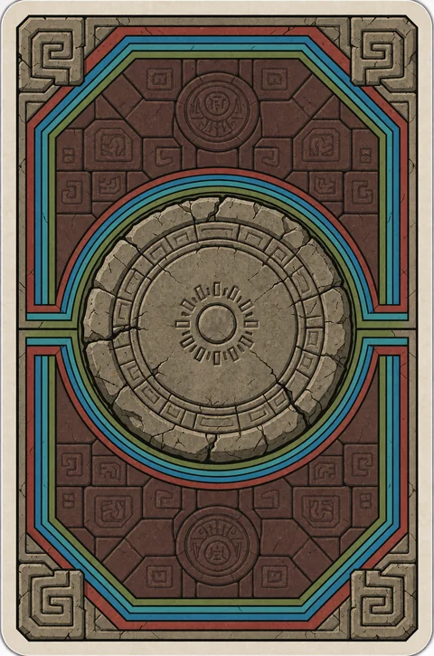

<!DOCTYPE html>
<meta charset="utf-8">
<title>公開バージョンのYON POKER</title>
<meta name="viewport" content="width=device-width,initial-scale=1">
<link rel="stylesheet" href="https://fonts.googleapis.com/css2?family=Bungee&family=Luckiest+Guy&family=Mochiy+Pop+One&display=swap">
<style>
/* 画面いっぱいがオリーブのフェルト卓（PROBE POKER と同じ見た目）。
   左右に使い込んだ革の手すり（上下の手すりと丸い角はやめた） */
:root {
  color-scheme: dark;
  --felt: #727a5e;
  --felt-dark: rgba(53,58,40,.16);
  --felt-light: rgba(150,162,118,.14);
  --rail-w: 32px;
}
html, body { height: 100%; }
/* 続けてクリックしたときに、カードやチップが文字や画像として選ばれて青くなる・ドラッグでつかめる、のをふせぐ */
html, body, body * { -webkit-user-select: none; user-select: none; -webkit-touch-callout: none; -webkit-tap-highlight-color: transparent; }
img, svg { -webkit-user-drag: none; user-drag: none; }
::selection { background: transparent; }
body {
  margin: 0; overflow: hidden;
  background:
    radial-gradient(circle at 18% 22%, var(--felt-dark) 0 6%, transparent 14%),
    radial-gradient(circle at 82% 68%, rgba(53,58,40,.12) 0 5%, transparent 12%),
    radial-gradient(circle at 64% 12%, var(--felt-light) 0 4%, transparent 10%),
    var(--felt);
}
.rail { position: fixed; pointer-events: none; z-index: 5; }
/* 左右：PROBE POKER と同じ縦の手すり（右は左右反転して継ぎ目をずらす） */
.rail.left, .rail.right { top: 0; bottom: 0; width: var(--rail-w);
  background: url(rail-l.webp) left top / var(--rail-w) 640px repeat-y; }
.rail.left { left: 0; }
.rail.right { right: 0; transform: scaleX(-1); background-image: url(rail-r.webp); background-position: left 220px; }

/* ---- 仮のカード（並びを見るためのもの。絵柄はまだ決めていない） ---- */
:root {
  --ink: #141414; --paper: #fbf7ec; --chip: 64px; }
.row { position: fixed; left: 0; right: 0; display: flex; justify-content: center; gap: var(--gap); z-index: 2;
  /* 自分の手札・場のカード：PROBE POKER Ver1.2 の手札（幅 clamp(64px, 17vw, 112px)）の約1.15倍。5:7、間 clamp(4px, 1.6vw, 14px) */
  --cw: clamp(74px, 19.5vw, 128px); --ch: calc(var(--cw) * 1.4); --gap: clamp(4px, 1.6vw, 14px); }
.row.opp { top: 12px; --cw: clamp(55px, 13.8vw, 90px); --gap: clamp(4px, 1.4vw, 10px); }   /* 相手の手札：PROBE POKER Ver1.2 の .opp（clamp(48px, 12vw, 78px)）の約1.15倍 */
.row.board { top: 50%; transform: translateY(-50%); }
.row.mine { bottom: 63px; }   /* 自分の手札：PROBE POKER Ver1.2 と同じ高さ（下から 63px） */
.card { width: var(--cw); height: var(--ch); box-sizing: border-box; border-radius: 8px;
  border: 1.5px solid var(--ink); background: var(--paper); position: relative;   /* 細い黒いふち */
  box-shadow: 0 4px 0 rgba(0,0,0,.25); font-family: "Luckiest Guy", "Mochiy Pop One", sans-serif; color: var(--ink); }
.card.back { background: #ece6d6 url(back.webp) center / cover no-repeat; }   /* 裏面の絵（石のメダルと3色の帯） */
/* カードの中：背景の絵＋数字の石の絵（2:3 の絵を 5:7 のカードいっぱいに、真ん中を基準に切って入れる） */
.card { overflow: hidden; }
.card img.art { position: absolute; inset: 0; width: 100%; height: 100%; object-fit: cover; object-position: center; display: block; }

/* ブルーチップの山（場の2枚の左と右）。PROBE POKER のチップと同じ絵 */
.hand { position: relative; display: flex; gap: var(--gap); }
.chips { position: fixed; z-index: 3; width: var(--chip); height: calc(var(--chip) * (.86 + .13 * 7));
  --cw: clamp(74px, 19.5vw, 128px); --chip: min(calc(var(--cw) * .5), 58px); }
/* 大きさ：場のカードの幅×0.5、最大 58px（PROBE POKER Ver1.2 の黄色いチップ（×0.62、最大 72px）より少し小さく）。
   置き場所：自分の山は場の2枚と自分の手札の真ん中の高さで、手札の左の外。相手の山は場の2枚と相手の手札の真ん中の高さで、横は自分の山を画面の真ん中で折り返した位置（左右対称）（スクリプトの placeChips が決める） */
.chips .chip { position: absolute; left: 0; width: var(--chip); height: calc(var(--chip) * .86); }
.chips .chip svg { width: 100%; height: 100%; display: block; overflow: visible; }

.toss-chip { position: fixed; pointer-events: none; }
.toss-chip svg { width: 100%; display: block; overflow: visible; }
.cb-cnt span { font-family: "Luckiest Guy", sans-serif; font-size: var(--fs); }
.dealer { position: fixed; z-index: 9; pointer-events: none; display: flex; flex-direction: column; align-items: center; }
.dealer[hidden] { display: none; }
.dealer svg { width: 100%; display: block; overflow: visible; filter: drop-shadow(0 3px 0 rgba(0,0,0,.3)); }
.dealer span { margin-top: 3px; font: 11px "Mochiy Pop One", sans-serif; color: var(--paper); -webkit-text-stroke: .25em var(--ink); paint-order: stroke fill; opacity: 0; transition: opacity .2s; white-space: nowrap; }
.dealer.set span { opacity: 1; }
.dealer.moving span { opacity: 0; transition: none; }   /* 動いている間は「センテ」の文字を消す（着いたら出る） */
.dealer.set { z-index: 2; }   /* 置いたあとは青い山より奥（山が高く積まれたら、山の後ろに隠れる） */
.dealer.opp { flex-direction: column-reverse; }   /* 相手の側は点対称：「センテ」の文字はチップの上 */
.dealer.opp span { margin: 0 0 3px; }
.gauge { position: fixed; z-index: 9; left: 44px; top: 50%; transform: translateY(-50%); display: flex; flex-direction: column; align-items: center; gap: 4px; pointer-events: none; }
.g-bar { width: 14px; height: min(42vh, 300px); display: flex; flex-direction: column; border: 2px solid var(--ink); border-radius: 999px; overflow: hidden; box-shadow: 0 3px 0 rgba(0,0,0,.3); }
.g-bar i { display: block; min-height: 0; transition: flex-grow .35s ease; }
.g-o { background: #ff8a7a; } .g-t { background: rgba(20,20,20,.25); } .g-m { background: #B6F23A; }
.g-n { font: 15px "Luckiest Guy", sans-serif; color: #fff; -webkit-text-stroke: .18em var(--ink); paint-order: stroke fill; min-width: 2ch; text-align: center; }
.g-n.low { color: #ff5a4a; animation: lowBlink 1s steps(2) infinite; }
@keyframes lowBlink { 50% { opacity: .45; } }
.pile-tag { position: fixed; z-index: 6; pointer-events: none; opacity: 0; transition: opacity .2s; min-width: 26px; box-sizing: border-box; padding: 2px 6px; text-align: center;
  font: 14px "Luckiest Guy", sans-serif; color: #fff; -webkit-text-stroke: .18em var(--ink); paint-order: stroke fill; background: rgba(20,20,20,.35); border: 2px solid var(--ink); border-radius: 999px; }
.pile-tag.show { opacity: 1; }
.round-pill { position: fixed; z-index: 10; left: 44px; top: 12px; min-width: 64px; min-height: 44px; display: flex; align-items: center; justify-content: center; text-align: center; box-sizing: border-box;
  font: 16px "Luckiest Guy", sans-serif; letter-spacing: .04em; color: var(--paper); background: rgba(20,20,20,.35);
  border: 2px solid var(--ink); border-radius: 999px; padding: 4px 10px; -webkit-text-stroke: .18em var(--ink); paint-order: stroke fill; }
/* 試合中のセッテイのボタン：「1 / 7」のすぐ下（同じ形の板） */
.game-set { position: fixed; z-index: 10; left: 44px; top: 64px; min-width: 64px; min-height: 36px; box-sizing: border-box; padding: 0 12px; cursor: pointer;
  font: 12px "Mochiy Pop One", sans-serif; color: var(--paper); background: rgba(20,20,20,.55); border: 2px solid var(--ink); border-radius: 999px;
  -webkit-text-stroke: .2em var(--ink); paint-order: stroke fill; box-shadow: 0 3px 0 rgba(0,0,0,.3); }
.game-set:active { transform: translateY(2px); box-shadow: 0 1px 0 rgba(0,0,0,.3); }
.game-set:focus-visible { outline: 3px solid var(--paper); outline-offset: 3px; }
/* ハンド（役の一覧）のタブ：相手の青いチップの山の真上の列（横の真ん中をそろえる）、高さは相手の手札の真ん中。
   置き場所はスクリプトの placeTab が決める。押すと下に一覧が開く */
.hand-tab { position: fixed; z-index: 10; top: 12px; left: 0;
  min-height: 44px; font: 14px "Mochiy Pop One", sans-serif; color: var(--paper);
  background: #4a4744; border: 3px solid var(--ink); border-radius: 999px; padding: 6px 14px; cursor: pointer;
  -webkit-text-stroke: .2em var(--ink); paint-order: stroke fill; box-shadow: 0 3px 0 rgba(0,0,0,.3); }
.hand-tab[aria-expanded="true"] { background: #c9a227; }
.hand-tab:active { transform: translateY(2px); box-shadow: 0 1px 0 rgba(0,0,0,.3); }
.hand-tab:focus-visible { outline: 3px solid var(--paper); outline-offset: 3px; }
.hand-panel { position: fixed; z-index: 20; top: 64px; right: 44px; width: min(390px, calc(100vw - 88px)); max-height: calc(100vh - 80px); overflow: auto;
  box-sizing: border-box; padding: 10px 12px; background: #f6f0e0; color: var(--ink); border: 3px solid var(--ink); border-radius: 14px;
  box-shadow: 0 6px 0 rgba(0,0,0,.3); font: 13px "Mochiy Pop One", sans-serif; }
.hand-panel[hidden] { display: none; }
.hand-panel h2 { margin: 0 0 6px; font-size: 14px; }
.hand-panel ol { list-style: none; margin: 0; padding: 0; }
.hand-panel li { display: grid; grid-template-columns: 16px 1fr auto; grid-template-rows: auto auto; column-gap: 6px; align-items: center; padding: 4px 0; border-top: 1.5px dashed rgba(20,20,20,.25); }
.hand-panel li:first-child { border-top: 0; }
.hand-panel .no { grid-row: span 2; font: 15px "Luckiest Guy", sans-serif; line-height: 1.3; }
.hand-panel .nm { font-size: 13px; }
.hand-panel .ds { font-size: 10px; color: #4a4744; grid-column: 2; }
.hand-panel .nm { grid-column: 2; }
.hand-panel .ex { grid-column: 3; grid-row: 1 / span 2; }
.hand-panel .ex { display: flex; gap: 3px; }
.hand-panel .ex b { width: 18px; height: 24px; display: grid; place-items: center; border: 1.5px solid var(--ink); border-radius: 4px;
  font: 14px "Luckiest Guy", sans-serif; color: #fff; -webkit-text-stroke: 3px var(--ink); paint-order: stroke fill; }
.hand-panel .ex .r { background: #e0574a; } .hand-panel .ex .b { background: #4a86d8; } .hand-panel .ex .g { background: #4fae5a; }
.hand-panel .ex { align-items: center; }
.hand-panel .ex i { font-style: normal; font-size: 11px; margin: 0 1px; }
.hand-panel .ex .bd { display: flex; gap: 3px; padding: 2px; border-radius: 6px; background: rgba(20,20,20,.12); }   /* 真ん中の2枚（どの役でも同じ） */
.hand-panel .ex em { font-style: normal; font-size: 11px; color: #8a8478; }
.hand-panel .note { margin: 6px 0 0; font-size: 10.5px; color: #4a4744; }
/* タイトルの場面：真ん中に「YON POKER」の文字、「4」のカード3枚、その下にボタン */
.title-scr .t-warm { position: fixed; left: 0; bottom: 0; width: clamp(74px, 19.5vw, 128px); height: calc(clamp(74px, 19.5vw, 128px) * 1.4); opacity: .01; pointer-events: none; z-index: -1; }
.title-scr .t-warm img { position: absolute; inset: 0; border: 0; box-shadow: none; }   /* 25枚を同じ場所に重ねる（画面の外だと描かれないので） */
.title-scr { position: fixed; inset: 0; z-index: 40; pointer-events: none; display: flex; flex-direction: column; align-items: center; justify-content: center; gap: clamp(14px, 3.5vh, 30px); }
.title-scr .t-logo { margin: 0; font: clamp(46px, 11vw, 104px) "Luckiest Guy", sans-serif; letter-spacing: .04em; line-height: 1; color: #fff; white-space: nowrap;
  -webkit-text-stroke: .1em var(--ink); paint-order: stroke fill; text-shadow: 0 .07em 0 rgba(0,0,0,.45); opacity: 0; }
.title-scr .t-logo span { color: #ffe36a; }
.title-scr .t-cards { display: flex; gap: clamp(8px, 2vw, 16px); --cw: clamp(68px, 16vw, 116px); --ch: calc(var(--cw) * 1.4); }
.title-scr .t-slot { position: relative; width: var(--cw); height: var(--ch); }
.title-scr .t-slot .card { position: absolute; inset: 0; }
.title-scr .t-btns { display: grid; grid-template-columns: repeat(2, minmax(130px, 1fr)); gap: 12px 14px; }
.t-btn { position: relative; pointer-events: auto; font: 16px "Mochiy Pop One", sans-serif; color: var(--paper); background: #4a4744; border: 3px solid var(--ink);
  border-radius: 999px; padding: 0 22px; min-height: 48px; cursor: pointer; -webkit-text-stroke: .2em var(--ink); paint-order: stroke fill; box-shadow: 0 4px 0 rgba(0,0,0,.35); }
.t-btn.go { background: #c9a227; font-size: 19px; }
.t-btn:active { transform: translateY(2px); box-shadow: 0 2px 0 rgba(0,0,0,.35); }
.t-btn:focus-visible { outline: 3px solid var(--paper); outline-offset: 3px; }
.t-btn.off { filter: saturate(.3) brightness(.75); cursor: not-allowed; }   /* PvP：まだ遊べない */
.t-btn.off:active { transform: none; box-shadow: 0 4px 0 rgba(0,0,0,.35); }
.t-btn .t-soon { position: absolute; top: -11px; right: -8px; font-size: 9.5px; color: var(--ink); -webkit-text-stroke: 0; background: #ffe36a; border: 2px solid var(--ink);
  border-radius: 999px; padding: 1px 7px; white-space: nowrap; transform: rotate(6deg); }
/* ルール・セッテイの板（「ハンド」の一覧と同じ板） */
.title-panel { z-index: 55; }
.title-panel h3 { margin: 12px 0 4px; font-size: 13px; padding: 2px 8px; background: #fff1a8; border: 2px solid var(--ink); border-radius: 8px; }
.title-panel p { margin: 4px 0; font-size: 11.5px; line-height: 1.65; }
.title-panel .t-row { display: flex; align-items: center; justify-content: space-between; gap: 10px; margin: 10px 0; font-size: 14px; }
.title-panel .t-tog { display: flex; gap: 6px; }
.title-panel .t-tog button { font: 14px "Mochiy Pop One", sans-serif; min-width: 64px; min-height: 40px; border: 3px solid var(--ink); border-radius: 999px; background: #e6dfcc; color: var(--ink); cursor: pointer; }
.title-panel .t-head { display: flex; align-items: center; justify-content: space-between; gap: 8px; margin-bottom: 8px; }
.title-panel .t-head h2 { margin: 0; }
.title-panel .t-x { font: 12px "Mochiy Pop One", sans-serif; color: var(--paper); background: #4a4744; border: 2px solid var(--ink); border-radius: 999px;
  min-height: 32px; padding: 0 12px; cursor: pointer; -webkit-text-stroke: .2em var(--ink); paint-order: stroke fill; box-shadow: 0 3px 0 rgba(0,0,0,.3); }
.title-panel .t-x:active { transform: translateY(2px); box-shadow: 0 1px 0 rgba(0,0,0,.3); }
.title-panel .t-tabs { display: flex; gap: 6px; margin-bottom: 8px; }
.title-panel .t-tabs button { flex: 1; font: 13px "Mochiy Pop One", sans-serif; min-height: 36px; border: 2px solid var(--ink); border-radius: 10px; background: #e6dfcc; color: var(--ink); cursor: pointer; }
.title-panel .t-tabs button[aria-selected="true"] { background: #c9a227; color: var(--paper); -webkit-text-stroke: .2em var(--ink); paint-order: stroke fill; }
.title-panel .t-page[hidden] { display: none; }
.title-panel .t-deck { display: grid; gap: 6px; margin: 8px 0; }
.title-panel .t-deck-row { display: grid; grid-template-columns: 22px repeat(8, 1fr); gap: 3px; align-items: center; }
.title-panel .t-deck-row img { width: 100%; aspect-ratio: 5 / 7; object-fit: cover; border: 1.5px solid var(--ink); border-radius: 4px; display: block; }
.title-panel .t-deck-c { display: grid; place-items: center; height: 22px; border: 1.5px solid var(--ink); border-radius: 6px; font-size: 11px; color: #fff; -webkit-text-stroke: .2em var(--ink); paint-order: stroke fill; }
.title-panel .t-deck-c.r { background: #e0574a; } .title-panel .t-deck-c.b { background: #4a86d8; } .title-panel .t-deck-c.g { background: #4fae5a; }
.title-panel .t-page h3:first-child { margin-top: 0; }
.title-panel .t-stat { display: flex; justify-content: space-around; margin: 8px 0 4px; padding: 6px 4px; background: #fff8d0; border: 2px solid var(--ink); border-radius: 10px; text-align: center; font-size: 11px; }
.title-panel .t-stat b { display: block; font: 22px "Luckiest Guy", sans-serif; line-height: 1.1; }
.title-panel .t-sub { display: flex; align-items: center; justify-content: space-between; gap: 8px; font-size: 11.5px; margin: 6px 0; }
.title-panel .t-sub .t-x { min-height: 30px; font-size: 11px; }
.title-panel .t-ver { margin: 12px 0 0; text-align: right; font-size: 10px; color: #8a8478; }
.title-panel .t-acts { display: grid; gap: 10px; margin-top: 14px; }
.title-panel .t-acts .rs-ok { margin: 0 auto; min-width: 200px; }
.title-panel .t-acts .danger { background: #c9361f; }
.title-panel .t-acts .dark { background: #4a4744; }
.title-panel .t-ask { margin: 12px 0 4px; text-align: center; font-size: 14px; }
.title-panel .t-acts.two { grid-template-columns: 1fr 1fr; }
.title-panel .t-acts.two .rs-ok { min-width: 0; width: 100%; }
.title-panel .t-tog button[aria-pressed="true"] { background: #6b9be0; color: var(--paper); -webkit-text-stroke: .2em var(--ink); paint-order: stroke fill; }
/* 試合の結果の表（「ハンド」の一覧と同じ板）：持ち数対決のあと、右からすべってくる */
.result-panel { z-index: 50; }
.result-panel .rs-big { margin: 2px 0 6px; text-align: center; font: 46px "Luckiest Guy", sans-serif; letter-spacing: .03em; line-height: 1.05;
  -webkit-text-stroke: .12em var(--ink); paint-order: stroke fill; text-shadow: 0 4px 0 rgba(0,0,0,.35); }
.result-panel .rs-big.win { color: #B6F23A; } .result-panel .rs-big.lose { color: #ff8a7a; } .result-panel .rs-big.draw { color: #ffe36a; }
.result-panel .rs-sum { margin: 0 0 8px; padding: 6px 8px; background: #fff8d0; border: 2px solid var(--ink); border-radius: 10px; font-size: 11.5px; line-height: 1.7; }
.result-panel .rs-sum b { font: 15px "Luckiest Guy", sans-serif; }
.result-panel li { grid-template-columns: 22px 1fr auto; }
.result-panel .rs-r { font-style: normal; font-size: 9.5px; color: #fff; border: 1.5px solid var(--ink); border-radius: 999px; padding: 0 5px; margin-left: 5px; vertical-align: 1px; white-space: nowrap; }
.result-panel .rs-r.w { background: #5aa832; } .result-panel .rs-r.l { background: #c9361f; } .result-panel .rs-r.d { background: #8a8478; }
.result-panel .rs-ok, .title-panel .rs-ok { display: block; margin: 10px auto 2px; font: 16px "Mochiy Pop One", sans-serif; color: var(--paper); background: #c9a227; border: 3px solid var(--ink);
  border-radius: 999px; padding: 0 22px; min-height: 48px; min-width: 150px; cursor: pointer; -webkit-text-stroke: .2em var(--ink); paint-order: stroke fill; box-shadow: 0 4px 0 rgba(0,0,0,.35); }
.result-panel .rs-ok:active, .title-panel .rs-ok:active { transform: translateY(2px); box-shadow: 0 2px 0 rgba(0,0,0,.35); }
.result-panel .rs-ok:focus-visible { outline: 3px solid var(--ink); outline-offset: 3px; }

/* カードを選ぶ：手札3枚から2枚。触れると浮いて黄色く光る。2枚選ぶと残りの1枚が暗く沈み、「ケッテイ」が出る */
.hand .card { transition: transform .22s cubic-bezier(.2,.9,.3,1.3), box-shadow .22s, filter .25s; }
.hand.picking .card { cursor: pointer; }
.hand.picking .card:not(.sel):hover { transform: translateY(-7px); }
.hand .card.sel { transform: translateY(-20px);
  box-shadow: 0 0 0 3px #ffe36a, 0 0 18px 5px rgba(255,227,106,.65), 0 12px 16px rgba(0,0,0,.45); }
.hand.full .card:not(.sel) { filter: brightness(.5) saturate(.6); transform: translateY(6px); }
/* ケッテイしたら、浮いていたカードも暗く沈んだカードも元の位置・明るさに戻ってから焼ける */
.hand.done .card, .hand.done.full .card:not(.sel) { transform: none; filter: none; box-shadow: 0 4px 0 rgba(0,0,0,.25);
  transition: transform .55s cubic-bezier(.3,.6,.3,1), box-shadow .55s, filter .55s; }   /* 戻るときは少しゆっくり */
.decide { position: fixed; z-index: 10; transform: translateY(-50%) scale(.6); opacity: 0; pointer-events: none;
  font: 16px "Mochiy Pop One", sans-serif; color: var(--paper); background: #c9a227; border: 3px solid var(--ink);
  border-radius: 999px; padding: 0 22px; min-height: 48px; min-width: 120px; cursor: pointer; -webkit-text-stroke: .2em var(--ink); paint-order: stroke fill;
  box-shadow: 0 4px 0 rgba(0,0,0,.35); transition: transform .25s cubic-bezier(.2,.9,.3,1.4), opacity .2s; }
.decide.show { transform: translateY(-50%) scale(1); opacity: 1; pointer-events: auto; }
.decide:active { transform: translateY(-50%) translateY(2px) scale(1); box-shadow: 0 2px 0 rgba(0,0,0,.35); }
.decide:focus-visible { outline: 3px solid var(--paper); outline-offset: 3px; }
.pick-hint { position: fixed; z-index: 10; transform: translate(-50%, -100%); margin: 0; pointer-events: none;
  font: 14px "Mochiy Pop One", sans-serif; color: var(--paper); -webkit-text-stroke: .24em var(--ink); paint-order: stroke fill;
  white-space: nowrap; opacity: 0; transition: opacity .3s; }
.pick-hint.show { opacity: 1; }
/* 見せた1枚につける、PC のブラウザのタブのような札（自分はカードの上のふち、相手は点対称で下のふち） */
.shown-tab { position: fixed; z-index: 6; pointer-events: none; box-sizing: border-box; height: 22px; padding: 0 12px;
  display: flex; align-items: center; gap: 5px; font: 11px "Mochiy Pop One", sans-serif; color: var(--ink); white-space: nowrap;
  background: #ffe36a; border: 2px solid var(--ink); border-bottom: 0; border-radius: 9px 9px 0 0; }
.shown-tab::before { content: ""; width: 7px; height: 7px; border-radius: 50%; background: #c9361f; border: 1.5px solid var(--ink); }
/* 見せる1枚を選ぶ：タップしたカードに黄色い光のふち */
.hand.reveal .card { cursor: pointer; }
.card.rv-sel { outline: 4px solid #ffe36a; outline-offset: 2px; box-shadow: 0 0 22px 4px rgba(255,227,106,.75); }
.rv-flash { position: fixed; z-index: 30; pointer-events: none; border-radius: 50%; translate: -50% -50%;
  background: radial-gradient(circle, rgba(255,255,255,.95) 0 18%, rgba(255,240,170,.6) 40%, rgba(255,240,170,0) 70%); }
/* 賭けのチップ（黒）：ヨウスミ／カケル。賭ける山の場所に投げ込まれ、用がすんだら持ち主の側へすべって消える */
.act-chip { position: fixed; z-index: 4; pointer-events: none; }
.act-chip svg { width: 100%; display: block; overflow: visible; filter: drop-shadow(0 3px 0 rgba(0,0,0,.35)); }
.act-chip span { position: absolute; left: 0; right: 0; top: 33%; text-align: center; transform: translateY(-50%);
  font: var(--fs) "Mochiy Pop One", sans-serif; color: #fff; -webkit-text-stroke: .2em #111; paint-order: stroke fill; white-space: nowrap; }
/* 持ち数のカード：選んだあと、手札の空いた3枚目の場所に出る（相手は左右の折り返し）。チップの絵と持ち数 */
.count-card { position: fixed; z-index: 2; box-sizing: border-box; border: 1.5px solid var(--ink); border-radius: 8px;
  background: var(--paper); box-shadow: 0 4px 0 rgba(0,0,0,.25); display: flex; flex-direction: column; align-items: center; justify-content: center; gap: 4%; }
.count-card .cc-l { font-family: "Mochiy Pop One", sans-serif; font-size: var(--l); color: var(--ink); }
.count-card .cc-c { width: 46%; }
.count-card .cc-c svg { width: 100%; display: block; overflow: visible; }
.count-card .cc-n { font-family: "Luckiest Guy", sans-serif; font-size: var(--n); line-height: 1; color: #fff; -webkit-text-stroke: .14em var(--ink); paint-order: stroke fill; }
/* 2枚選んだときにできるハンドの名前（選んだカードと同じ黄色の札。手札の上の真ん中にポンと出る） */
.role-tag { position: fixed; z-index: 10; transform: translate(-50%, -100%) scale(.6); margin: 0; pointer-events: none; opacity: 0;
  font: 14px "Mochiy Pop One", sans-serif; color: var(--ink); background: #ffe36a; border: 3px solid var(--ink); border-radius: 999px;
  padding: 4px 12px; white-space: nowrap; box-shadow: 0 3px 0 rgba(0,0,0,.3); transition: transform .25s cubic-bezier(.2,.9,.3,1.5), opacity .2s; }
.role-tag.show { opacity: 1; transform: translate(-50%, -100%) scale(1); }
.role-tag small { font-size: 11px; margin-right: 4px; }
/* ハンドの一覧：いまの手札でできるハンドの欄と、できるハンドの印 */
.hand-panel .mine { margin: 0 0 8px; padding: 6px 8px; background: #fff8d0; border: 2px solid var(--ink); border-radius: 10px; }
.hand-panel .mine h3 { margin: 0 0 4px; font-size: 12px; }
.hand-panel .opt > span { white-space: nowrap; }
.hand-panel .opt { display: flex; align-items: center; gap: 6px; padding: 3px 0; font-size: 12px; }
.hand-panel .opt .ex { flex: none; }
.hand-panel .opt .best { color: #c9361f; }
.hand-panel li.can { background: #fff1a8; border-radius: 8px; box-shadow: inset 0 0 0 2px #e0b81f; padding-left: 4px; padding-right: 4px; }
.hand-panel li.can .nm::after { content: " ← デキル"; font-size: 10px; color: #c9361f; }
.hand-panel .gk { font-style: normal; font-size: 9.5px; color: #fff; background: #c9361f; border: 1.5px solid var(--ink); border-radius: 999px; padding: 0 5px; margin-left: 5px; vertical-align: 1px; white-space: nowrap; }
.hand-panel .opp-tag { font-style: normal; font-size: 9.5px; color: #fff; background: #3a6fc4; border: 1.5px solid var(--ink); border-radius: 999px; padding: 0 5px; margin-left: 5px; vertical-align: 1px; white-space: nowrap; }
.hand-panel li.opp-can { box-shadow: inset 3px 0 0 #3a6fc4; }
.hand-tab.pulse { animation: tabPulse .9s ease-out 2; }
@keyframes tabPulse { 0% { transform: scale(1); } 30% { transform: scale(1.18); background: #c9a227; } 100% { transform: scale(1); } }
.hand-panel .gk-note { margin: 6px 0 0; padding: 5px 7px; font-size: 10.5px; line-height: 1.45; background: #ffe0d8; border: 2px solid var(--ink); border-radius: 8px; }
.hand-panel .gk-note b { color: #c9361f; }


/* 賭けるかどうかのボタン（カケル・オリル）：カードが前に出たあと、画面の右からすべってきて、自分の手札の右に縦に並ぶ */
.bet { position: fixed; z-index: 10; display: flex; gap: 8px; transform: translateY(-50%); pointer-events: none; }
.bet.show { pointer-events: auto; }
.bet button { font: 16px "Mochiy Pop One", sans-serif; color: var(--paper); border: 3px solid var(--ink); border-radius: 999px;
  padding: 0 16px; min-height: 48px; min-width: 96px; cursor: pointer; -webkit-text-stroke: .2em var(--ink); paint-order: stroke fill;
  box-shadow: 0 4px 0 rgba(0,0,0,.35); }
.bet .up { background: #f0705a; }
.bet .down { background: #8a7fb8; }   /* ヘラス：賭ける山から1枚戻す */
.bet .yes { margin-left: 22px; }     /* 枚数を決めるボタン（フヤス・ヘラス）と、決めるボタン（カケル・ヨウスミ／フォールド）の間をあける */
/* せまい画面では5つのボタンが手すりにかからないよう、少し小さくする（押しやすさのため高さ44px は残す） */
@media (max-width: 680px) {
  .bet { gap: 5px; }
  .bet button { font-size: 13px; padding: 0 10px; min-width: 0; min-height: 44px; }
  .bet .yes { margin-left: 14px; }
}
.bet .yes { background: #6b9be0; }   /* カケル：ブルーチップの色 */
.bet .no { background: #4a4744; }    /* オリル：灰色 */
.bet button:active { transform: translateY(2px); box-shadow: 0 2px 0 rgba(0,0,0,.35); }
.bet button:focus-visible { outline: 3px solid var(--paper); outline-offset: 3px; }

/* 相手のセリフ（考えている・フヤシタ・カケル）：相手の赤いチップの山の下に出る */
.say { position: fixed; z-index: 11; margin: 0; pointer-events: none; opacity: 0; white-space: nowrap; transform: translate(-50%, 0);
  font: 15px "Mochiy Pop One", sans-serif; color: var(--paper); -webkit-text-stroke: .24em var(--ink); paint-order: stroke fill; }
.bet-note { position: fixed; z-index: 11; margin: 0; pointer-events: none; transform: translate(-50%, -100%); opacity: 0; transition: opacity .2s;
  font: 14px "Mochiy Pop One", sans-serif; color: #ffe36a; -webkit-text-stroke: .22em var(--ink); paint-order: stroke fill; white-space: nowrap; }
.bet-note.show { opacity: 1; }
.say.strong { font-size: 20px; color: #ff8a6a; }

/* 伏せた自分のカードは、触れるとオモテを確かめられる */
.hand.peek .card { cursor: pointer; }

/* 対決（PROBE POKER の VS 対決と同じ作り）：真ん中にギザギザの「VS」、両方のカードの上にトゲトゲの吹き出しで役の名前 */
.cb-pop { position: fixed; z-index: 45; pointer-events: none; display: grid; place-items: center; translate: -50% -50%; filter: drop-shadow(4px 5px 0 rgba(0,0,0,.85)); }
.cb-pop svg { position: absolute; inset: 0; width: 100%; height: 100%; overflow: visible; }
.cb-pop span { position: relative; line-height: 1.05; color: #fff; -webkit-text-stroke: .09em #111; paint-order: stroke fill; text-align: center; }
.cb-vs span { font-family: "Bungee", "Arial Black", Impact, sans-serif; color: #ff4a3d; font-size: var(--fs); transform: rotate(-8deg); }
.cb-num span { font-family: "Mochiy Pop One", sans-serif; font-size: var(--fs); max-width: 76%; margin-left: 14%; white-space: nowrap; }
.cb-num.cb-fold span { margin-left: 0; max-width: 90%; }   /* 降りたときの「オリタ」の札：番号の丸がないので文字は真ん中 */
.result-msg { position: fixed; z-index: 46; left: 50%; top: 50%; margin: 0; transform: translate(-50%, -50%); pointer-events: none; white-space: nowrap;
  font: 30px "Mochiy Pop One", sans-serif; color: #ffe36a; -webkit-text-stroke: .24em var(--ink); paint-order: stroke fill; opacity: 0; }
/* ページを開いた最初のロゴ動画（YON FLAT。音なしで自動再生）：白い画面いっぱいに出し、終わったら白ごとふわっと消えてタイトルへ */
.intro { position: fixed; inset: 0; z-index: 200; background: #fff; display: flex; align-items: center; justify-content: center; }
.intro video { width: 100%; height: 100%; object-fit: cover; background: #fff; pointer-events: none; }
.intro-half { position: fixed; inset: 0; z-index: 201; pointer-events: none; will-change: transform; }
.intro-half canvas { display: block; width: 100%; height: 100%; }
</style>

<div class="intro" id="intro" aria-hidden="true"><video src="video/intro.mp4" muted playsinline preload="auto"></video></div>
<div class="rail left" aria-hidden="true"></div>
<div class="rail right" aria-hidden="true"></div>

<!-- 相手の手札3枚（伏せている）・場の2枚・自分の手札3枚。数字とマークは仮 -->
<div class="row opp"><div class="card back"></div><div class="card back"></div><div class="card back"></div></div>
<div class="row board" id="board"></div>
<div class="row mine" id="mine"></div>

<script>
(() => {
  // マーク：△（3本）・□（4本）・☆（5本）
  const MARK = {
    tri:  '<path d="M50 8 L94 88 L6 88 Z"/>',
    sq:   '<rect x="10" y="10" width="80" height="80"/>',
    star: '<path d="M50 4 L61 38 L97 38 L68 59 L79 94 L50 73 L21 94 L32 59 L3 38 L39 38 Z"/>',
  };
  // カード：中に背景＋数字の石の絵（art/<色>-<数字>.webp）。赤・青・緑 × 1〜8 の24枚
  // 表の絵は data-front に持たせ、配るときは裏面（back.webp）で出してから、めくってオモテにする
  const card = (n, m) => `<div class="card" aria-label="${n}" data-front="art/${m}-${n}.webp"></div>`;
  document.getElementById('board').innerHTML = card(7, 'red') + card(2, 'blue');
  document.body.insertAdjacentHTML('beforeend', '<div class="chips" id="chipsL"></div><div class="chips" id="oppChipsR"></div>');
  document.getElementById('mine').innerHTML =
    `<div class="hand">${card(8, 'green') + card(7, 'blue') + card(2, 'green')}</div>`;

  // 配る：24枚を混ぜて上から 場2枚・自分3枚・相手3枚（相手の表は data-front に持つだけで、勝負まで見せない）
  function dealCards() {
    const deck = ['red', 'blue', 'green'].flatMap(m => [1, 2, 3, 4, 5, 6, 7, 8].map(n => [n, m]));
    for (let i = deck.length - 1; i > 0; i--) { const j = Math.floor(Math.random() * (i + 1)); [deck[i], deck[j]] = [deck[j], deck[i]]; }
    const put = (c, [n, m], show) => {
      c.dataset.front = `art/${m}-${n}.webp`;
      if (show) { c.setAttribute('aria-label', n); const img = c.querySelector('img.art'); if (img) img.src = matchMedia('(prefers-reduced-motion: reduce)').matches ? c.dataset.front : 'back.webp'; }
    };
    const board = [...document.querySelectorAll('#board .card')];
    board.forEach((c, i) => { put(c, deck[i], true); c.querySelector('img.art').src = c.dataset.front; });   // 真ん中の2枚は表のまま出す
    HAND_ORDER.forEach((c, i) => put(c, deck[2 + i], true));
    OPP_ORDER.forEach((c, i) => put(c, deck[5 + i], false));
  }
  // ブルーチップ：ななめ上から見た円盤（上の面＋厚み、白いふちの模様6つ、内側の円と白い点線の輪）
  const INK = '#141414', WHITE = '#fbf7ec';
  const CHIP_SPIN = 15;   // 積んだチップの白い模様の向きをそろえる（全部同じ向き）
  const BLUE = { face: '#6b9be0', inner: '#86b0ea', side: '#4569a8' };
  function chipSVG(c, spin) {
    const T = 9, stripes = [], side = [];
    for (let i = 0; i < 6; i++) {
      const a = spin + i * 60;
      stripes.push(`<rect x="45" y="5" width="10" height="13" rx="2" fill="${WHITE}" stroke="${INK}" stroke-width="2" transform="rotate(${a} 50 50)"/>`);
      const r = ((a % 360) + 360) % 360, sx = Math.sin(r * Math.PI / 180), cy = Math.cos(r * Math.PI / 180);
      if (cy < -0.15) {
        const x = 50 + sx * 46, w = 9 * Math.sqrt(1 - sx * sx) + 2, yy = 40 + 33 * Math.sqrt(Math.max(0, 1 - sx * sx));
        side.push(`<rect x="${x - w / 2}" y="${yy}" width="${w}" height="${T - 1}" fill="${WHITE}"/>`);
      }
    }
    return `<svg viewBox="0 -4 100 90" aria-hidden="true">
      <path d="M4 40 L4 ${40 + T} A46 33 0 0 0 96 ${40 + T} L96 40 Z" fill="${c.side}" stroke="${INK}" stroke-width="4" stroke-linejoin="round"/>
      ${side.join('')}
      <path d="M4 ${40 + T} A46 33 0 0 0 96 ${40 + T}" fill="none" stroke="${INK}" stroke-width="4"/>
      <g transform="translate(0,4) scale(1,.72)">
        <circle cx="50" cy="50" r="46" fill="${c.face}" stroke="${INK}" stroke-width="4.5"/>
        ${stripes.join('')}
        <circle cx="50" cy="50" r="29" fill="${c.inner}" stroke="${INK}" stroke-width="3"/>
        <circle cx="50" cy="50" r="23" fill="none" stroke="${WHITE}" stroke-width="2.5" stroke-dasharray="6 5" transform="rotate(${spin} 50 50)"/>
      </g></svg>`;
  }
  // 山：下から8枚。1枚ごとに少しずつ上へ、向きもばらばら
  /* チップを山に置く：1列は20枚まで。21枚目からは隣に新しい列（本物の卓と同じ）。
     新しい列は手札から離れる向きに並ぶ（自分の青い山は左へ、自分の賭ける山は右へ、相手はその折り返し） */
  const COL = 20;
  function stackPos(el, i, st) {
    const dir = { chipsL: -1, redChips: 1, oppChipsR: 1, oppRedChips: -1 }[st.id] || 1;
    const per = /RedChips|redChips/.test(st.id) ? 10 : Infinity;   // 青い山はいつも1列（1回の勝負で1人が出すのは最大17枚）   // 賭ける山は10枚ごとに次の列（自分は左から右へ、相手は右から左へ）
    const col = Math.floor(i / per), row = i % per;
    const base = +(st.dataset.base || 0);   // 賭けのチップ（黒）の上に積むときは、その厚みぶん上から
    el.style.bottom = `calc(${row} * var(--chip) * .13 + ${base}px)`;
    el.style.left = `calc(${col * dir} * var(--chip) * 1.08)`;
  }
  const N = 5;   // 青いチップ＝参加料（アンティ）。お互い毎回5枚ずつ出す
  /* 持ち数：手元にあって、まだ卓に出していないチップの数。はじめはお互い30枚。
     配るときに参加料の5枚、赤いチップを出すたびにその枚数だけ減り、戻ってきた分・勝ってもらった分だけ増える。
     「モウイチド クバル」をまたいで続く（どちらかが参加料を払えなくなったら、お互い30枚からやり直し）。
     賭けられるのは持ち数まで（本物のポーカーと同じ） */
  const START = 40;   // 持ち数のはじめ（仮）
  const hold = { me: START, opp: START };
  let holdAtDeal = { ...hold }, settled = true;
  const countEls = { me: null, opp: null };
  function updateCount() { updateGauge(); }   // 持ち数はゲージで見せる（カードは賭けた枚数）
  /* 持ち数の綱引きゲージ（画面の左はし、手すりの内側にたてに1本）：
     上＝相手の持ち数（赤）、下＝自分の持ち数（黄緑）、真ん中＝いま卓に出ているチップ（灰色）。合計はいつも 40×2＝80枚。
     勝つと自分の色が伸び、負けると押し返される。持ち数が1回で動く最大（17枚）より少ないと、数字が赤く点滅する */
  const gauge = document.createElement('div'); gauge.className = 'gauge'; gauge.setAttribute('aria-label', '持ち数');
  gauge.innerHTML = '<span class="g-n g-opp"></span><div class="g-bar"><i class="g-o"></i><i class="g-t"></i><i class="g-m"></i></div><span class="g-n g-me"></span>';
  document.body.appendChild(gauge);
  function updateGauge() {
    const T = START * 2, t = Math.max(0, T - hold.me - hold.opp);
    gauge.querySelector('.g-o').style.flexGrow = hold.opp; gauge.querySelector('.g-t').style.flexGrow = t; gauge.querySelector('.g-m').style.flexGrow = hold.me;
    const o = gauge.querySelector('.g-opp'), m = gauge.querySelector('.g-me');
    o.textContent = hold.opp; m.textContent = hold.me;
    o.classList.toggle('low', hold.opp < 17); m.classList.toggle('low', hold.me < 17);
    gauge.setAttribute('aria-label', `持ち数 アナタ ${hold.me}・アイテ ${hold.opp}・卓の上 ${t}`);
  }
  let tagFrozen = false;   // 勝負・フォールドが始まったら、賭けた枚数のカードの数字を止める（精算でチップが動いても変えない）
  // 青い山に乗っている枚数（飛んでいる途中のチップは数えない）
  function pileCount(k) {
    const st = document.getElementById(k === 'me' ? 'chipsL' : 'oppChipsR');
    if (!st) return 0;
    return [...st.querySelectorAll('.chip')].filter(c => !c.getAnimations().some(a => a.playState === 'running' || a.playState === 'pending')).length;
  }
  // 賭けた枚数のカードの数字を、着地に合わせて書きかえる（勝負が終わって山が動き出したら止める）
  function updatePileTags() {
    for (const k of ['me', 'opp']) {
      const el = countEls[k]; if (!el) continue;
      const st = document.getElementById(k === 'me' ? 'chipsL' : 'oppChipsR');
      if (st.getAnimations().length || tagFrozen) continue;
      el.querySelector('.cc-n').textContent = pileCount(k);
    }
  }
  setInterval(updatePileTags, 120);
  function spend(who, k) { hold[who] -= k; updateCount(); }
  function buildBlue() {
   document.querySelectorAll('#chipsL, #oppChipsR').forEach(chips => {
    chips.innerHTML = '';
    for (let i = 0; i < N; i++) {
      const el = document.createElement('div'); el.className = 'chip';
      stackPos(el, i, chips);   // 1枚の厚み＝チップの幅の 0.13（投げる実験と同じ）
      el.innerHTML = chipSVG(BLUE, CHIP_SPIN);
      chips.appendChild(el);
    }
   });
  }
  buildBlue();

  // チップの山の置き場所：高さは場の2枚の真ん中と手札の真ん中のちょうど間、横は手札の左右の外に 18px あけて。
  // 自分の山は手札の左（chipsL）、相手の山は相手の手札の右（oppChipsR）に1つずつ
  function placeChips() {
    const b = document.getElementById('board').getBoundingClientRect();
    const mine = document.querySelector('.hand').getBoundingClientRect();
    const opp = document.querySelector('.row.opp').getBoundingClientRect();
    const midOf = (a, c) => ((a.top + a.bottom) / 2 + (c.top + c.bottom) / 2) / 2;
    // 横は左右対称：自分の山を手札の左の外に置き、相手の山はそれを画面の真ん中で折り返した位置（右側）に置く
    const me = document.getElementById('chipsL'), op = document.getElementById('oppChipsR');
    const w = me.getBoundingClientRect().width;
    const x = Math.min(Math.max(mine.left - 18 - w, 36), innerWidth / 2 - w);   // 左の手すり（32px）にかからないように
    me.style.left = x + 'px';
    op.style.left = (innerWidth - x - w) + 'px';
    me.style.top = (midOf(b, mine) - me.getBoundingClientRect().height / 2) + 'px';
    // 高さも上下対称：相手の山は、自分の山を場の2枚の真ん中（高さ）で折り返した位置
    const bMid = (b.top + b.bottom) / 2, meMid = midOf(b, mine);
    op.style.top = (2 * bMid - meMid - op.getBoundingClientRect().height / 2) + 'px';
  }
  addEventListener('resize', placeChips);
  placeChips();

  /* 配る演出（ページを開いたときに1回）：
     1. ブルーチップが投げ込まれる：自分の山は画面の下から、相手の山は画面の上から、1枚ずつ弧を描いて積まれる
     2. 手札がくる：自分の3枚は画面の右から、相手の3枚は画面の左から、1枚ずつ（前の1枚が置かれてから）交互にすべってくる
     3. 真ん中の2枚がくる：左の1枚は画面の左から、右の1枚は画面の右から */
  function dealIn() {
    tagFrozen = false;
    dealCards();   // 毎回24枚をよく混ぜて、場の2枚・自分の3枚・相手の3枚を配る
    holdAtDeal = { ...hold }; settled = false;
    hold.me -= N; hold.opp -= N;   // 参加料
    updateGauge();
    showRound();
    if (matchMedia('(prefers-reduced-motion: reduce)').matches) { startPick(); return; }
    const W = innerWidth, H = innerHeight, ease = 'cubic-bezier(.2,.8,.25,1)';
    const slideFrom = (el, fromRight, delay) => {
      const r = el.getBoundingClientRect();
      const dx = fromRight ? W - r.left + 40 : -(r.right + 40);
      const rot = fromRight ? 14 : -14;
      el.animate([
        { transform: `translateX(${dx}px) rotate(${rot}deg)`, opacity: 1 },
        { transform: 'none', opacity: 1 },
      ], { duration: 420, delay, easing: ease, fill: 'backwards' });
      playAt('cardDeal', delay + 300, .6);   // 置かれる手前で「シュッ」（音のいちばん大きい所＝0.08秒あたりが、止まる瞬間に来る）
    };
    // 1. ブルーチップ（下の札から順に、自分と相手を交互に。1枚 700ms、100ms おき）
    const CHIP_MS = 700;
    let t = 100;
    const stacks = [[document.getElementById('chipsL'), H + 80], [document.getElementById('oppChipsR'), -120]];
    const chipsOf = st => [...st.querySelectorAll('.chip')];
    const n = Math.max(...stacks.map(([st]) => chipsOf(st).length));
    for (let i = 0; i < n; i++) {
      for (const [st, startY] of stacks) {
        const c = chipsOf(st)[i]; if (!c) continue;
        const r = c.getBoundingClientRect();
        const sx = (r.left + r.width / 2) + (Math.random() - .5) * 160, dx = sx - (r.left + r.width / 2), dy = startY - r.top;
        const spin = (Math.random() - .5) * 120;
        c.animate([
          { transform: `translate(${dx}px, ${dy}px) rotate(${spin}deg) scale(1.15)`, opacity: 1 },
          { transform: `translate(${dx * .35}px, ${Math.min(dy * .35, 0) - 70}px) rotate(${spin * .3}deg) scale(1.25)`, opacity: 1, offset: .6 },
          { transform: 'translate(0, 0) rotate(0) scale(1)', opacity: 1, offset: .88 },
          { transform: 'translate(0, -5px)', opacity: 1, offset: .94 },
          { transform: 'none', opacity: 1 },
        ], { duration: CHIP_MS, delay: t, easing: 'ease-out', fill: 'backwards' });
        playAt('chipClack', t + CHIP_MS * .88, .6);          // 着地した音
        t += 100;
      }
    }
    // 自分の手札は、いったん裏面で出す（真ん中の2枚は表のまま出す）
    const faceUp = [...document.querySelectorAll('.hand .card')];   // 真ん中の2枚は表のまま出す
    faceUp.forEach(c => c.querySelector('img.art').src = 'back.webp');
    // 2. 手札（自分→相手→自分…の順に交互。1枚が置かれてから次の1枚）
    const mine = [...document.querySelectorAll('.hand .card')];   // 右から来るが、左はしの札から順に置く
    const opp = [...document.querySelectorAll('.row.opp .card')].reverse();   // 左から来るが、右はしの札から順に置く（自分と点対称）
    t += 450;
    for (let i = 0; i < 3; i++) {
      slideFrom(mine[i], true, t); t += 480;
      slideFrom(opp[i], false, t); t += 480;
    }
    // 3. 真ん中の2枚（左は左から、右は右から）
    t += 300;
    const board = [...document.querySelectorAll('#board .card')];
    slideFrom(board[0], false, t);
    slideFrom(board[1], true, t + 160);
    // 4. めくる：自分の手札（左から）。配り終わってから
    const handDone = t - 300 + 200, boardDone = t + 160 + 420 + 250;
    mine.forEach((c, i) => flipUp(c, handDone + i * 180));
    flipTimers.push(setTimeout(startPick, Math.max(handDone + 3 * 180, boardDone) + 450));   // 手札がめくれて、真ん中の2枚が置かれたら選べるようにする
  }
  // 1枚めくる：横につぶれて（裏）→ 絵をオモテに替えて → 少し浮きながら広がる
  let flipTimers = [];
  // 音：PROBE POKER と同じチップの着地の音（sfx/chip-clack.mp3）。投げる音はなし。ブラウザの決まりで、ページを触る前は鳴らないことがある
  let ac = null; const SFX = {}, SFX_FILES = { chipClack: 'sfx/chip-clack.mp3', burn: 'sfx/burn.mp3', cardThrow: 'sfx/card-throw.mp3',
    cardFlip: 'sfx/card-flip.mp3',       // 表に返す：紙を1枚めくる音（Splice の ESM_Horror_Game_UI_Organic_Paper_Page_Turn_Single_Flip_2 の頭0.18秒を切って0.42秒に）
    cardSelect: 'sfx/card-select.mp3',   // 手札を選ぶ：軽いボタン音（Splice の ESM_Button_Navigation_Select_Team_8_Game_Organic_Cartoon_Sci_Fi を0.15秒に）
    cardDeal: 'sfx/card-deal.mp3' };     // 配る：1枚を「シュッ」と置く音（Splice の ESM_Card_Game_Card_Deal_Single_Whoosh_02、-4dB）
  function audio() {
    if (!ac) { try { ac = new (window.AudioContext || window.webkitAudioContext)(); } catch (e) { return null; } }
    if (ac.state === 'suspended') ac.resume().catch(() => {});
    for (const [k, f] of Object.entries(SFX_FILES)) if (!SFX[k]) {
      SFX[k] = 'loading';
      fetch(f).then(r => r.arrayBuffer()).then(b => ac.decodeAudioData(b)).then(buf => { SFX[k] = buf; }).catch(() => { delete SFX[k]; });
    }
    return ac;
  }
  // オト（セッテイで ON／OFF）。選んだ方は次に開いたときも残す
  // muted・vol：SE（効果音）の ON／OFF と大きさ（ショウ .5・チュウ 1・ダイ 1.6）。bgmMuted・bgmVol：BGM の ON／OFF と大きさ
  let muted = false, vol = 1, bgmMuted = false, bgmVol = 1;
  try {
    muted = localStorage.getItem('yonpoker-mute') === '1'; vol = +(localStorage.getItem('yonpoker-vol') || 1) || 1;
    bgmMuted = localStorage.getItem('yonpoker-bgm-mute') === '1'; bgmVol = +(localStorage.getItem('yonpoker-bgm-vol') || 1) || 1;
  } catch (e) {}
  /* BGM：2曲を場面で切り替える（どちらもユーザーが Splice で「持っている音だけ」で作ったもの）。
     title＝YON POKER 1 Funky Sax Table（120 BPM・8小節＝16秒）。タイトルの場面で流す
     game ＝ピアノ（SO_STB_90_keys_piano_chords_hiddenrooms_Cmin。-16 LUFS）におとなしめのドラム（ORBIT_TO_90_drum_loop_kick_snare_milk。高音 -4dB・-22 LUFS）を
     4小節（10.667秒）ごとに入れたり抜いたりした1本の曲（90 BPM・13周＝138.667秒。並びは ピピドドドピドドピピドドド。入り・抜けは小節の頭で0.1秒）。試合中に流す
     素材をそのまま取り出せないように、曲は1本にまとめ、ファイルは中身を変換して置き（拡張子は .mp3 のままでも、そのままでは再生できない）、unmaskBgm で戻してから鳴らす。
     ブラウザの決まりで、ページに一度触れてから流れ始める。切り替えは重ねずに区切る（playBgm の中の説明）。
     音量は BGM_GAIN×bgmVol（セッテイの BGM のオオキサ）、BGM が OFF なら 0 */
  const BGM_TRACKS = { title: { file: 'bgm/title.mp3', len: 16 }, game: { file: 'bgm/game.mp3', len: 416 / 3 } };
  const BGM_KEY = 'YONPOKER-4-table';
  function unmaskBgm(b) { const u = new Uint8Array(b); for (let i = 0; i < u.length; i++) u[i] ^= BGM_KEY.charCodeAt(i % 16); return u.buffer; }
  const BGM_GAIN = .22, BGM_FADE = 1.2;
  const bgmBufs = {}, bgmLoads = {};
  let bgmWant = 'title', bgmStarted = false, bgmCur = null;   // bgmCur：{ name, src, gain } いま流れている曲
  const bgmLevel = () => bgmMuted ? 0 : BGM_GAIN * bgmVol;
  function loadBuf(key, file, a) {
    return bgmLoads[key] || (bgmLoads[key] = fetch(file).then(r => r.arrayBuffer()).then(b => a.decodeAudioData(unmaskBgm(b)))
      .then(buf => (bgmBufs[key] = buf)).catch(() => { delete bgmLoads[key]; }));
  }
  function loadBgm(name, a) {
    return loadBuf(name, BGM_TRACKS[name].file, a);
  }
  async function playBgm(name) {
    const a = audio(); if (!a) return;
    if (bgmCur && bgmCur.name === name) return;
    if (!bgmBufs[name]) { await loadBgm(name, a); if (!bgmBufs[name] || bgmWant !== name || (bgmCur && bgmCur.name === name)) return; }
    const t = a.currentTime, old = bgmCur;
    // 曲と曲の間：重ねずに区切る（テンポもキーも違う2曲が同時に鳴ってにごらないように）
    //   タイトル → 試合：テープストップ（タイトル曲が0.9秒で遅く低くなって止まる）→ 0.3秒の無音 → 試合の曲が1秒でふわっと
    //   試合 → タイトル：控えめに、0.8秒でフェードアウト → 0.3秒の無音 → タイトルの曲が1.2秒でふわっと
    let begin = t, fadeIn = BGM_FADE;
    if (old) {
      const g = old.gain.gain; g.cancelScheduledValues(t); g.setValueAtTime(g.value, t);
      if (old.name === 'title' && name === 'game' && !reduceMotion) {
        for (const s of [old.src]) { const r = s.playbackRate; r.cancelScheduledValues(t); r.setValueAtTime(r.value, t); r.linearRampToValueAtTime(.05, t + .9); }
        g.setValueAtTime(g.value, t + .55); g.linearRampToValueAtTime(0, t + .9);
        try { old.src.stop(t + .95); } catch (e) {}
        begin = t + .9 + .3; fadeIn = 1;
      } else {
        g.linearRampToValueAtTime(0, t + .8);
        try { old.src.stop(t + .85); } catch (e) {}
        begin = t + .8 + .3;
      }
    }
    const gain = a.createGain(); gain.gain.value = 0; gain.gain.setValueAtTime(0, t); gain.gain.setValueAtTime(0, begin); gain.gain.linearRampToValueAtTime(bgmLevel(), begin + fadeIn);
    const src = a.createBufferSource(); src.buffer = bgmBufs[name]; src.loop = true;
    src.loopStart = 0; src.loopEnd = Math.min(BGM_TRACKS[name].len, src.buffer.duration);   // MP3 の終わりの余白を入れず、ちょうどの小節で回す
    src.connect(gain).connect(a.destination); src.start(begin);
    bgmCur = { name, src, gain, begin, len: src.loopEnd };
  }
  function startBgm() { if (!audio()) return; bgmStarted = true; playBgm(bgmWant); }   // ページに初めて触れたとき
  function setBgm(name) { bgmWant = name; if (bgmStarted) playBgm(name); }        // 場面が変わったとき
  function updateBgm() {   // セッテイを変えたとき：前の指定を取り消してから、今の値から合わせ直す
    if (!bgmCur || !ac) return;
    const g = bgmCur.gain.gain, t = ac.currentTime;
    g.cancelScheduledValues(t); g.setValueAtTime(g.value, t); g.setTargetAtTime(bgmLevel(), t, .15);
  }
  addEventListener('pointerdown', startBgm); addEventListener('keydown', startBgm);
  function playSfx(k, vol0) {
    if (muted) return;
    const a = audio(), buf = SFX[k]; if (!a || !buf || buf === 'loading') return;
    const src = a.createBufferSource(), g = a.createGain();
    src.buffer = buf; src.playbackRate.value = .92 + Math.random() * .16; g.gain.value = vol * vol0;
    src.connect(g).connect(a.destination); src.start();
  }
  function playAt(k, delay, vol) { flipTimers.push(setTimeout(() => playSfx(k, vol), delay)); }
  audio();
  addEventListener('pointerdown', audio, { once: true });
  function flipUp(c, delay) {
    flipTimers.push(setTimeout(() => { const img = c.querySelector('img.art'); flipCard(c, () => { img.src = c.dataset.front; }, c.dataset.front); }, delay));
  }


  /* カードを選ぶ演出：手札3枚から2枚を選ぶ。
     触れる → 浮いて黄色く光る（もう一度触れると戻る）。3枚目に触れると、先に選んだ方が戻って入れ替わる。
     2枚そろう → 残りの1枚が暗く沈み、手札の上に「ケッテイ」。押すと、残りの1枚は裏返って右へすべって消え、選んだ2枚が少し下りて決まる */
  const handEl = document.querySelector('.hand');
  const hint = Object.assign(document.createElement('p'), { className: 'pick-hint', textContent: '2マイ エラブ' });
  const roleTag = Object.assign(document.createElement('p'), { className: 'role-tag' });
  const decide = Object.assign(document.createElement('button'), { className: 'decide', type: 'button', textContent: 'ケッテイ' });
  document.body.append(hint, roleTag, decide);
  let picked = [];
  const HAND_ORDER = [...handEl.children], OPP_ROW = document.querySelector('.row.opp'), OPP_ORDER = [...OPP_ROW.children];

  // ボタンの置き場所（ケッテイ・カケル共通）：画面の大きさに関係なく、手札の下の真ん中（手札と画面の下はしのあいだ）
  function buttonSpot(w) {
    const hand = document.querySelector('.hand').getBoundingClientRect();
    return { left: innerWidth / 2 - w / 2, top: (hand.bottom + innerHeight) / 2 };
  }
  function placePickUI() {
    const r = handEl.getBoundingClientRect(), x = r.left + r.width / 2 + 'px', y = r.top - 28 + 'px';
    Object.assign(hint.style, { left: x, top: y }); Object.assign(roleTag.style, { left: x, top: y });
    const sp = buttonSpot(decide.offsetWidth);
    decide.style.left = sp.left + 'px'; decide.style.top = sp.top + 'px';
  }
  function refreshPick() {
    handEl.querySelectorAll('.card').forEach(c => c.classList.toggle('sel', picked.includes(c)));
    const full = picked.length === 2;
    handEl.classList.toggle('full', full);
    decide.classList.toggle('show', full);
    hint.classList.toggle('show', handEl.classList.contains('picking') && !full);
    // 2枚選んだら、場の2枚と合わせてできるハンドの名前を出す
    if (full) { const e = handOf(picked); roleTag.innerHTML = `<small>${SHOWN_NO(e.role)}</small>${ROLE[e.role]}`; }
    roleTag.classList.toggle('show', full && handEl.classList.contains('picking'));
  }
  // 自分のカード2枚＋場の2枚でできるハンド
  const frontOf = c => c.dataset.front;
  function handOf(two) { return evalHand([...two, ...document.querySelectorAll('#board .card')].map(c => parse(frontOf(c)))); }
  function startPick() {
    picked = []; handEl.classList.add('picking'); placePickUI(); refreshPick();
    document.dispatchEvent(new Event('pickstart'));   // 「ハンド」のタブがひょっこり出る合図
  }
  function resetPick() {
    picked = []; handEl.classList.remove('picking', 'full', 'done', 'peek', 'reveal');
    handEl.querySelectorAll('.card').forEach(c => c.classList.remove('peeking'));
    document.querySelectorAll('.burn-cv').forEach(x => x.remove());
    HAND_ORDER.forEach(c => handEl.appendChild(c)); OPP_ORDER.forEach(c => OPP_ROW.appendChild(c));
    [...HAND_ORDER, ...OPP_ORDER].forEach(c => { delete c.dataset.shown; c.classList.remove('rv-sel'); c.style.visibility = ''; c.style.maskImage = c.style.webkitMaskImage = ''; c.getAnimations().forEach(a => a.cancel()); });
    refreshPick(); hint.classList.remove('show');
  }
  // 伏せた自分のカードに触れる：オモテにして確かめる。もう一度触れると裏に戻る（絵だけを裏返すので、前に出た位置はそのまま）
  handEl.addEventListener('click', e => {
    const c = e.target.closest('.card');
    if (!c || !handEl.classList.contains('peek') || c.style.visibility === 'hidden' || c.dataset.shown) return;   // 見せた1枚は表のまま
    const img = c.querySelector('img.art'), toFront = !img.src.includes(c.dataset.front);
    flipImg(c, toFront);
  });
  handEl.addEventListener('click', e => {
    const c = e.target.closest('.card'); if (!c || !handEl.classList.contains('picking')) return;
    if (picked.includes(c)) picked = picked.filter(x => x !== c);
    else { picked.push(c); if (picked.length > 2) picked.shift(); }
    playSfx('cardSelect', .5);
    refreshPick();
  });
  decide.addEventListener('click', () => {
    if (picked.length !== 2 || !decide.classList.contains('show')) return;   // 消えていく途中の2回目の押しは効かない（勝負が2本同時に進むのを防ぐ）
    const rest = [...handEl.querySelectorAll('.card')].find(c => !picked.includes(c));
    handEl.classList.remove('picking'); handEl.classList.add('done');
    decide.classList.remove('show'); hint.classList.remove('show'); roleTag.classList.remove('show');
    playSfx('chipClack', .5);
    flipTimers.push(setTimeout(() => burnUnpicked(rest), 650));   // 戻りきってから焼く
  });
  /* 焼く：PROBE POKER Ver1.2 の burnAway と同じ作り。カード本体に CSS の mask で穴を開け、上に重ねた canvas に
     燃えている境目・焦げ・火の粉を描く。自分は黄緑の火（燃え方は毎回ちがう）、相手は下から赤い火 */
  const reduceMotion = matchMedia('(prefers-reduced-motion: reduce)').matches;
  const BURN_PATTERNS = {
    center: (W, H) => { const ox = W * (.35 + Math.random() * .3), oy = H * (.35 + Math.random() * .3), far = Math.hypot(Math.max(ox, W - ox), Math.max(oy, H - oy)); return (x, y) => Math.hypot(x - ox, y - oy) / far; },
    bottom: (W, H) => (x, y) => 1 - y / H,
    top: (W, H) => (x, y) => y / H,
    side: (W, H) => { const l = Math.random() < .5; return (x, y) => l ? x / W : 1 - x / W; },
    corner: (W, H) => { const cx = Math.random() < .5 ? 0 : W, cy = Math.random() < .5 ? 0 : H, far = Math.hypot(W, H); return (x, y) => Math.hypot(x - cx, y - cy) / far; },
    twin: (W, H) => { const a = [W * (.2 + Math.random() * .25), H * (.2 + Math.random() * .2)], b = [W * (.55 + Math.random() * .25), H * (.6 + Math.random() * .2)], far = Math.hypot(W, H) * .6; return (x, y) => Math.min(1, Math.min(Math.hypot(x - a[0], y - a[1]), Math.hypot(x - b[0], y - b[1])) / far); },
    edges: (W, H) => { const m = Math.min(W, H) / 2; return (x, y) => 1 - Math.min(x, W - x, y, H - y) / m; },
  };
  function burnNoise(W, H, pattern) {
    const n = new Float32Array(W * H);
    const layer = (cell, amp) => {
      const gw = Math.ceil(W / cell) + 2, g = new Float32Array(gw * (Math.ceil(H / cell) + 2)).map(() => Math.random());
      for (let y = 0; y < H; y++) {
        const fy = y / cell, iy = Math.floor(fy), ty = fy - iy, sy = ty * ty * (3 - 2 * ty);
        for (let x = 0; x < W; x++) {
          const fx = x / cell, ix = Math.floor(fx), tx = fx - ix, sx = tx * tx * (3 - 2 * tx);
          const A = g[iy * gw + ix], B = g[iy * gw + ix + 1], C = g[(iy + 1) * gw + ix], D = g[(iy + 1) * gw + ix + 1];
          n[y * W + x] += amp * ((A + (B - A) * sx) + ((C + (D - C) * sx) - (A + (B - A) * sx)) * sy);
        }
      }
    };
    const k = W / 120;
    layer(38 * k, .55); layer(16 * k, .3); layer(6 * k, .15);
    const pf = BURN_PATTERNS[pattern](W, H);
    for (let y = 0; y < H; y++) for (let x = 0; x < W; x++) { const i = y * W + x; n[i] = n[i] * .55 + pf(x, y) * .45; }
    return n;
  }
  const HAND_BURN_MS = 1500;
  /* 焼く前の下ごしらえ（カードの形と、焼ける順番のもようを作る）。
     まとめて焼くときは、焼き始める前に1枚ずつ先に作っておく（焼き始めの瞬間に重い計算が重なって、画面が止まらないように）。
     キャンバスは willReadFrequently：パソコンによってはキャンバスが GPU で描かれていて、
     getImageData（中身を読む）や toDataURL のたびに GPU から読み戻す待ちが起き、一瞬固まる原因になる */
  function burnPrep(el, side, pattern) {
    const r = el.getBoundingClientRect();
    const W = Math.max(2, Math.round(r.width)), H = Math.max(2, Math.round(r.height));
    const shape = document.createElement('canvas'); shape.width = W; shape.height = H;
    const sg = shape.getContext('2d', { willReadFrequently: true }), rad = parseFloat(getComputedStyle(el).borderTopLeftRadius) || W * .06;
    sg.beginPath(); if (sg.roundRect) sg.roundRect(0, 0, W, H, rad); else sg.rect(0, 0, W, H); sg.fill();
    const inside = sg.getImageData(0, 0, W, H).data;
    const pats = Object.keys(BURN_PATTERNS);
    const noise = burnNoise(W, H, pattern || (side === 'me' ? pats[Math.floor(Math.random() * pats.length)] : 'bottom'));
    return { r, W, H, inside, noise };
  }
  async function burnAway(el, side, pattern) {
    if (reduceMotion || !el.isConnected) { el.style.visibility = 'hidden'; return; }
    const PAD = 30;
    const { r, W, H, inside, noise } = el._burnPrep || burnPrep(el, side, pattern);
    el._burnPrep = null;
    // 火の色はどの場面でも赤にそろえる（選ばなかったカード・フォールド・自分・相手すべて）
    const FIRE = { c: [[255, 240, 140], [255, 96, 40], [160, 18, 8]], char: [42, 12, 8], ember: [255, 120, 60] };
    const fireAt = e => { const [a, b, c] = FIRE.c, u = e < .5 ? e * 2 : (e - .5) * 2, P = e < .5 ? a : b, Q = e < .5 ? b : c; return [P[0] + (Q[0] - P[0]) * u, P[1] + (Q[1] - P[1]) * u, P[2] + (Q[2] - P[2]) * u]; };
    const mask = document.createElement('canvas'); mask.width = W; mask.height = H;
    const mg = mask.getContext('2d', { willReadFrequently: true }), md = mg.createImageData(W, H), m = md.data;
    const cv = document.createElement('canvas'); cv.className = 'burn-cv';
    cv.width = W + PAD * 2; cv.height = H + PAD * 2;
    Object.assign(cv.style, { position: 'fixed', left: (r.left - PAD) + 'px', top: (r.top - PAD) + 'px', width: cv.width + 'px', height: cv.height + 'px', zIndex: 25, pointerEvents: 'none' });
    document.body.appendChild(cv);
    const g = cv.getContext('2d'), over = g.createImageData(W, H), o = over.data;
    const setMask = url => { el.style.webkitMaskImage = el.style.maskImage = `url(${url})`; el.style.webkitMaskSize = el.style.maskSize = '100% 100%'; el.style.webkitMaskRepeat = el.style.maskRepeat = 'no-repeat'; };
    const embers = [], EDGE = .035, CHAR = .11, t0 = performance.now();
    await new Promise(res => {
      const frame = now => {
        if (!el.isConnected || !cv.isConnected) return res();
        const k = Math.min(1, (now - t0) / HAND_BURN_MS), t = -.06 + k * 1.2;
        const front = [];
        for (let i = 0, j = 0; i < W * H; i++, j += 4) {
          o[j + 3] = 0;
          if (!inside[j + 3]) { m[j + 3] = 0; continue; }
          const d = noise[i] - t;
          if (d < 0) { m[j + 3] = 0; continue; }
          m[j + 3] = 255;
          if (d < EDGE) {
            const e = d / EDGE, f = fireAt(e);
            o[j] = f[0]; o[j + 1] = f[1]; o[j + 2] = f[2]; o[j + 3] = Math.round(255 * (.55 + .45 * e));
            if (Math.random() < .004) front.push(i);
          } else if (d < CHAR) {
            const c = 1 - (d - EDGE) / (CHAR - EDGE);
            o[j] = FIRE.char[0]; o[j + 1] = FIRE.char[1]; o[j + 2] = FIRE.char[2]; o[j + 3] = Math.round(255 * .85 * c);
          }
        }
        mg.putImageData(md, 0, 0); setMask(mask.toDataURL());
        g.clearRect(0, 0, cv.width, cv.height);
        g.putImageData(over, PAD, PAD);
        for (const i of front.slice(0, 2)) embers.push({ x: PAD + (i % W), y: PAD + Math.floor(i / W), vx: (Math.random() - .5) * .6, vy: -(0.5 + Math.random()), life: 1, r: .8 + Math.random() * 1.2 });
        g.globalCompositeOperation = 'lighter';
        for (const e of embers) {
          e.x += e.vx + Math.sin((now + e.y) / 90) * .3; e.y += e.vy; e.life -= .03;
          if (e.life <= 0) continue;
          const ec = FIRE.ember;
          g.fillStyle = `rgba(${ec[0]},${Math.min(255, ec[1] + Math.round(60 * e.life))},${ec[2]},${e.life})`;
          g.beginPath(); g.arc(e.x, e.y, e.r, 0, Math.PI * 2); g.fill();
        }
        g.globalCompositeOperation = 'source-over';
        for (let q = embers.length - 1; q >= 0; q--) if (embers[q].life <= 0) embers.splice(q, 1);
        if (k < 1 || embers.length) requestAnimationFrame(frame); else res();
      };
      requestAnimationFrame(frame);
    });
    el.style.visibility = 'hidden';
    cv.remove();
  }
  // 焼けたカードの分を詰める：自分は左へ、相手は右へ。焼けたカード（見えない）は反対のはしへ回して、場所だけ残す（FLIP で寄せる）
  const BURN_GAP_MS = 650;
  function packRow(row, burned, toLeft) {
    const others = [...row.children].filter(e => e !== burned && e.classList.contains('card'));
    const before = others.map(e => e.getBoundingClientRect().left);
    if (toLeft) row.appendChild(burned); else row.insertBefore(burned, row.firstChild);
    if (reduceMotion) return;
    others.forEach((e, k) => {
      const dx = before[k] - e.getBoundingClientRect().left;
      if (Math.abs(dx) < 1) return;
      const cs = getComputedStyle(e).transform, keep = cs === 'none' ? '' : cs;
      e.animate([{ transform: `translateX(${dx}px) ${keep}` }, { transform: keep || 'none' }], { duration: BURN_GAP_MS, easing: 'cubic-bezier(.2,.8,.3,1)' });
    });
  }
  // 自分と相手で同時に1枚ずつ焼く（相手はいまは伏せたカードからランダムに1枚）
  async function burnUnpicked(mine) {
    const oppRow = document.querySelector('.row.opp');
    const oppCards = [...oppRow.querySelectorAll('.card')];
    // 相手は、残した2枚と場の2枚でいちばん強い役になるように1枚を焼く
    const boardC = [...document.querySelectorAll('#board .card')].map(c => parse(c.dataset.front));
    let oppBurn = oppCards[0], bestE = null;
    for (const c of oppCards) {
      const e = evalHand([...oppCards.filter(x => x !== c).map(x => parse(x.dataset.front)), ...boardC]);
      if (!bestE || cmp(e, bestE) > 0) { bestE = e; oppBurn = c; }
    }
    playSfx('burn', .6);
    await Promise.all([burnAway(mine, 'me'), burnAway(oppBurn, 'opp')]);
    packRow(handEl, mine, true);
    packRow(oppRow, oppBurn, false);
    // 詰め終わったら、自分の2枚を裏返して伏せる → 自分も相手も、伏せたまま場の方へ前に出す
    await new Promise(r => flipTimers.push(setTimeout(r, BURN_GAP_MS + 100)));
    const myTwo = [...handEl.querySelectorAll('.card')].filter(c => c !== mine);
    myTwo.forEach((c, i) => flipDown(c, i * 180));
    await new Promise(r => flipTimers.push(setTimeout(r, 2 * 180 + 450)));
    handEl.classList.add('peek');   // ここから、伏せた自分のカードに触れるとオモテを確かめられる
    const oppTwo = [...oppRow.querySelectorAll('.card')].filter(c => c !== oppBurn);
    const b = document.getElementById('board').getBoundingClientRect();
    const hr = myTwo[0].getBoundingClientRect(), orr = oppTwo[0].getBoundingClientRect();
    const upMine = -(hr.top - b.bottom) * .45, downOpp = (b.top - orr.bottom) * .45;   // 場との間の半分弱だけ前へ
    myTwo.forEach((c, i) => c.animate([{ transform: 'none' }, { transform: `translateY(${upMine}px)` }],
      { duration: 520, delay: i * 90, easing: 'cubic-bezier(.3,.6,.3,1)', fill: 'forwards' }));
    // 相手の2枚は、前に出ながら場のカードと同じ大きさに戻す。横は、自分の2枚を画面の真ん中で折り返した位置（重ならない）
    const grow = b.height / orr.height;
    const myC = myTwo.map(c => { const r = c.getBoundingClientRect(); return r.left + r.width / 2; });
    oppTwo.forEach((c, i) => {
      const r = c.getBoundingClientRect(), cx = r.left + r.width / 2;
      const dx = (innerWidth - myC[myTwo.length - 1 - i]) - cx;
      c.animate([{ transform: 'none' }, { transform: `translate(${dx}px, ${downOpp + r.height * (grow - 1) / 2}px) scale(${grow})` }],
        { duration: 520, delay: i * 90, easing: 'cubic-bezier(.3,.6,.3,1)', fill: 'forwards' });
    });
    flipTimers.push(setTimeout(() => showCount(myTwo, oppTwo), 520 + 90 + 40));   // 前に出終わったら、空いた3枚目の場所に持ち数のカード
    flipTimers.push(setTimeout(runBetting, 520 + 90 + 250));   // 前に出終わったら、ボタンが右から来る
  }
  // 持ち数のカード：自分は2枚の右どなり（空いた3枚目の場所）に画面の右から、相手はそれを左右に折り返した位置に画面の左から
  function showCount(myTwo, oppTwo) {
    removeCount();
    const a = myTwo[0].getBoundingClientRect(), b = myTwo[1].getBoundingClientRect(), o = oppTwo[0].getBoundingClientRect();
    const w = b.width, h = b.height, x = b.left + (b.left - a.left);
    const spots = { me: [x, b.top, true], opp: [innerWidth - x - w, o.top, false] };
    for (const who of ['me', 'opp']) {
      const [lx, ty, fromRight] = spots[who];
      const el = document.createElement('div'); el.className = 'count-card';
      Object.assign(el.style, { left: lx + 'px', top: ty + 'px', width: w + 'px', height: h + 'px' });
      el.style.setProperty('--l', w * .13 + 'px'); el.style.setProperty('--n', w * .4 + 'px');
      // 賭けたチップの数のカード：参加料＋賭けた分（いま自分の青い山に乗っている枚数）。チップが着地するたびに増える
      el.setAttribute('aria-label', (who === 'me' ? 'アナタ' : 'アイテ') + 'が賭けた枚数');
      el.innerHTML = `<span class="cc-l">カケタ</span><span class="cc-c">${chipSVG(BLUE, CHIP_SPIN)}</span><span class="cc-n">${pileCount(who)}</span>`;
      document.body.appendChild(el); countEls[who] = el;
      if (!reduceMotion) {
        const dx = fromRight ? innerWidth - lx + 40 : -(lx + w + 40);
        el.animate([{ transform: `translateX(${dx}px) rotate(${fromRight ? 14 : -14}deg)` }, { transform: 'none' }], { duration: 420, easing: 'cubic-bezier(.2,.8,.25,1)', fill: 'backwards' });
      }
    }
  }
  function removeCount() { for (const k of ['me', 'opp']) { countEls[k]?.remove(); countEls[k] = null; } }
  // 賭けるかどうかのボタン：自分の手札の右（チップの山と左右対称の位置）へ、画面の右の外からすべってくる
  const bet = document.createElement('div'); bet.className = 'bet'; bet.setAttribute('role', 'group'); bet.setAttribute('aria-label', '賭けるかどうか');
  bet.innerHTML = '<button type="button" class="up">フヤス</button><button type="button" class="down">ヘラス</button><button type="button" class="yes">カケル</button><button type="button" class="no">ヨウスミ</button>';   // オリルはまだ出さない
  bet.style.visibility = 'hidden';
  document.body.appendChild(bet);
  function placeBet() {
    const sp = buttonSpot(bet.getBoundingClientRect().width);
    bet.style.left = sp.left + 'px'; bet.style.top = sp.top + 'px';
  }
  // 赤いチップの山（賭ける数）：自分は手札の右、相手はその上下左右の折り返し（相手の手札の左）。
  // 枚数ははじめ1枚で、フヤスで増やす。自分と相手は同じ枚数
  // 賭けるチップも青（持ち数・参加料と同じ1枚1点のチップ。本物のポーカーでも色は点数の違いを表すだけ）。白いもようの向きも青い山にそろえる
  const RED = BLUE;   // 名前（.chip.red）は「賭けたチップ」の印として残す
  const mkStack = id => { const d = document.createElement('div'); d.className = 'chips'; d.id = id; d.style.visibility = 'hidden'; document.body.appendChild(d); return d; };
  const redSt = mkStack('redChips'), oppRedSt = mkStack('oppRedChips');
  function buildRed(st, n) {
    st.innerHTML = '';
    for (let i = 0; i < n; i++) {
      const el = document.createElement('div'); el.className = 'chip red';
      stackPos(el, i, st);
      el.innerHTML = chipSVG(BLUE, CHIP_SPIN);
      st.appendChild(el);
    }
  }
  function placeRed() {
    const me = document.getElementById('chipsL').getBoundingClientRect(), op = document.getElementById('oppChipsR').getBoundingClientRect();
    redSt.style.left = (innerWidth - me.left - me.width) + 'px'; redSt.style.top = me.top + 'px';     // 自分の青い山の左右の折り返し
    oppRedSt.style.left = me.left + 'px'; oppRedSt.style.top = op.top + 'px';                           // 相手の青い山の左右の折り返し
  }
  function throwStack(st, fromBottom) {
    st.style.visibility = '';
    if (reduceMotion) return;
    [...st.children].forEach((c, i) => {
      const r = c.getBoundingClientRect(), dx = (Math.random() - .5) * 160, dy = (fromBottom ? innerHeight + 80 : -120) - r.top, spin = (Math.random() - .5) * 120;
      c.animate([
        { transform: `translate(${dx}px, ${dy}px) rotate(${spin}deg) scale(1.15)` },
        { transform: `translate(${dx * .35}px, ${Math.min(dy * .35, 0) - 70}px) rotate(${spin * .3}deg) scale(1.25)`, offset: .6 },
        { transform: 'none', offset: .88 }, { transform: 'translate(0, -5px)', offset: .94 }, { transform: 'none' },
      ], { duration: 700, delay: i * 100, easing: 'ease-out', fill: 'backwards' });
      playAt('chipClack', i * 100 + 616, .5);
    });
  }
  function showRed() {
    const n = betRound >= 2 ? 4 : 2;   // 賭ける額：1回目は2枚、2回目は4枚（いちおう固定。フヤス・ヘラスはそのまま残す）。持ち数が足りなければ持ち数まで
    const nm = Math.min(n, hold.me), no = Math.min(n, hold.opp);
    buildRed(redSt, nm); buildRed(oppRedSt, no); placeRed(); spend('me', nm); spend('opp', no);
    throwStack(redSt, true); throwStack(oppRedSt, false);
  }
  // フヤス：赤いチップを1枚ずつ足す（自分と相手は同じ枚数なので両方に1枚ずつ）。多すぎないよう 20枚まで
  const RED_MAX = 20;   // 1回に賭けられるのは20枚まで（持ち数が少なければ持ち数まで）
  function addRed() {
    if (redSt.children.length >= RED_MAX) { playSfx('chipClack', .15); return; }
    for (const [st, fromBottom] of [[redSt, true], [oppRedSt, false]]) {
      const i = st.children.length;
      const el = document.createElement('div'); el.className = 'chip red';
      stackPos(el, i, st);
      el.innerHTML = chipSVG(BLUE, CHIP_SPIN);
      st.appendChild(el);
      if (reduceMotion) continue;
      const r = el.getBoundingClientRect(), dx = (Math.random() - .5) * 120, dy = (fromBottom ? innerHeight + 80 : -120) - r.top;
      el.animate([
        { transform: `translate(${dx}px, ${dy}px) rotate(${(Math.random() - .5) * 120}deg) scale(1.15)` },
        { transform: `translate(${dx * .35}px, ${Math.min(dy * .35, 0) - 60}px) scale(1.25)`, offset: .6 },
        { transform: 'none', offset: .88 }, { transform: 'translate(0, -5px)', offset: .94 }, { transform: 'none' },
      ], { duration: 560, easing: 'ease-out', fill: 'backwards' });
    }
    playAt('chipClack', 490, .5);
  }
  // カケル：自分の赤いチップが、下の札から1枚ずつ弧を描いて、自分の青いチップの山の上に積み上がる
  let betBase = 0;
  function betRed(st = redSt, blueId = 'chipsL', wait = 0) {
    const blue = document.getElementById(blueId);
    if (st === redSt) betBase = blue.querySelectorAll('.chip.red').length;
    const base = blue.querySelectorAll('.chip').length;
    const g = 230;   // 1枚ずつていねいに（前の1枚が持ち上がってから、次の1枚が動く）
    // 賭ける山のいちばん上の1枚から順に動かす。動いているチップは青い山の中にあるので、
    // 青い山を賭ける山より手前にして、賭ける山の下をくぐって見えないようにする
    const list = [...st.children].reverse();
    blue.style.zIndex = 5; st.style.zIndex = 4;
    flipTimers.push(setTimeout(() => { blue.style.zIndex = st.style.zIndex = ''; }, wait + list.length * g + 700));
    // 青い山の中に先に移すので、待っているチップの重なり順がさかさまになる（上のチップが下のチップの後ろに隠れる）。
    // 待っている間は賭ける山のときの重なり順（下ほど奥）を z-index で保ち、動き出したら一番手前、着いたら元に戻す
    const n = list.length;
    list.forEach((c, i) => {
      const before = c.getBoundingClientRect();
      stackPos(c, base + i, blue);
      blue.appendChild(c);
      c.style.zIndex = 100 + (n - 1 - i);
      flipTimers.push(setTimeout(() => { c.style.zIndex = 300; }, wait + i * g));
      flipTimers.push(setTimeout(() => { c.style.zIndex = ''; }, wait + i * g + 640));
      const after = c.getBoundingClientRect();
      const dx = before.left - after.left, dy = before.top - after.top;
      if (reduceMotion) return;
      // 山のいちばん上からまっすぐ持ち上がる → 弧を描いて青い山の真上へ → 真上から下りて積まれる
      c.animate([
        { transform: `translate(${dx}px, ${dy}px)` },
        { transform: `translate(${dx}px, ${dy - 26}px) scale(1.06)`, offset: .2 },
        { transform: `translate(${dx / 2}px, ${Math.min(dy, 0) / 2 - 60}px) scale(1.12)`, offset: .5 },
        { transform: 'translate(0, -26px) scale(1.06)', offset: .78 },
        { transform: 'none', offset: .92 }, { transform: 'translate(0, -3px)', offset: .96 }, { transform: 'none' },
      ], { duration: 620, delay: wait + i * g, easing: 'ease-in-out', fill: 'backwards' });
      playAt('chipClack', wait + i * g + 570, .5);
    });
  }
  let betRound = 1;   // いま何回目の賭けか
  function showBet(opts = {}) {
    if (!opts.keepRed) showRed();
    placeBet(); bet.style.visibility = ''; bet.classList.add('show');
    // 画面の左の外からすべってくる（右はしのボタンが先頭）。少し行きすぎて戻る。消えるときは今までどおり右へ
    const dx = -(bet.getBoundingClientRect().right + 30), kids = [...bet.children];
    kids.forEach((b, i) => b.animate([{ transform: `translateX(${dx}px)` }, { transform: 'translateX(8px)', offset: .8 }, { transform: 'none' }],
      { duration: 520, delay: (kids.length - 1 - i) * 110, easing: 'cubic-bezier(.2,.8,.3,1)', fill: 'backwards' }));
  }
  function hideBet(now) {
    if (now) { for (const st of [redSt, oppRedSt]) { st.style.visibility = 'hidden'; st.innerHTML = ''; } document.querySelectorAll('#chipsL .chip.red, #oppChipsR .chip.red').forEach(c => c.remove()); }
    bet.classList.remove('show');
    if (now) { bet.style.visibility = 'hidden'; [...bet.children].forEach(b => b.getAnimations().forEach(a => a.cancel())); return; }
    const dx = innerWidth - bet.getBoundingClientRect().left + 30;
    Promise.all([...bet.children].map((b, i) => b.animate([{ transform: 'none' }, { transform: `translateX(${dx}px)` }],
      { duration: 380, delay: i * 80, easing: 'cubic-bezier(.5,0,.75,.4)', fill: 'forwards' }).finished))
      // 消え終わるまでに次のボタンが出ていたら（すぐ次の自分の番が来たとき）、隠さない（隠すと押せないボタンが残って止まる）
      .then(() => { if (bet.classList.contains('show')) return; bet.style.visibility = 'hidden'; [...bet.children].forEach(b => b.getAnimations().forEach(a => a.cancel())); }, () => {});
  }
  /* 賭けの流れ（1回ぶん）：
     自分が カケル（フヤスで増やした分も） → 赤いチップが自分の青い山へ → 相手が考える（少し待つ）→
     相手は「同じ枚数でカケル」か「さらにフヤス」。フヤシタときは、自分にその分の赤いチップが来て、もう一度 カケル／カケナイ を選ぶ。
     カケナイ のときは、相手は今の赤いチップをそのまま賭ける。賭けは2回 */
  // 待つ：コウサン・タイトルへ戻るで試合を止めたら（matchEpoch が変わったら）、前の試合の流れの待ちは終わらない（そこで止まる）
  let matchEpoch = 0;
  const wait = ms => { const ep = matchEpoch; return new Promise(r => flipTimers.push(setTimeout(() => { if (ep === matchEpoch) r(); }, ms))); };
  const say = document.createElement('p'); say.className = 'say'; document.body.appendChild(say);
  function sayAt(text, strong) {
    const r = oppRedSt.getBoundingClientRect();
    say.textContent = text; say.classList.toggle('strong', !!strong);
    say.style.left = (r.left + r.width / 2) + 'px'; say.style.top = (r.bottom + 14) + 'px';
    say.getAnimations().forEach(x => x.cancel());
    say.animate(strong
      ? [{ opacity: 0, transform: 'translate(-50%, 0) scale(.5)' }, { opacity: 1, transform: 'translate(-50%, 0) scale(1.25) rotate(-4deg)', offset: .2 },
         { opacity: 1, transform: 'translate(-50%, 0) scale(1) rotate(3deg)', offset: .3 }, { opacity: 1, transform: 'translate(-50%, 0) scale(1) rotate(0)', offset: .85 }, { opacity: 0, transform: 'translate(-50%, -10px)' }]
      : [{ opacity: 0, transform: 'translate(-50%, 6px)' }, { opacity: 1, transform: 'translate(-50%, 0)', offset: .15 }, { opacity: 1, transform: 'translate(-50%, 0)', offset: .85 }, { opacity: 0, transform: 'translate(-50%, -6px)' }],
      { duration: strong ? 1500 : 1200, fill: 'forwards' });
  }
  // 赤いチップを k 枚、山に投げ込む（自分は下から、相手は上から）
  function throwTo(st, k, fromBottom) {
    const who = st === redSt ? 'me' : 'opp';
    k = Math.min(k, hold[who]);   // 持ち数より多くは出せない
    spend(who, k);
    const gap = Math.min(110, 1100 / Math.max(k, 1));   // 一度にたくさん出すときは間を詰める
    for (let j = 0; j < k; j++) {
      const i = st.children.length;
      const el = document.createElement('div'); el.className = 'chip red';
      stackPos(el, i, st);
      el.innerHTML = chipSVG(BLUE, CHIP_SPIN);
      st.appendChild(el);
      if (reduceMotion) continue;
      const r = el.getBoundingClientRect(), dx = (Math.random() - .5) * 120, dy = (fromBottom ? innerHeight + 80 : -120) - r.top;
      el.animate([
        { transform: `translate(${dx}px, ${dy}px) rotate(${(Math.random() - .5) * 120}deg) scale(1.15)` },
        { transform: `translate(${dx * .35}px, ${Math.min(dy * .35, 0) - 60}px) scale(1.25)`, offset: .6 },
        { transform: 'none', offset: .88 }, { transform: 'translate(0, -5px)', offset: .94 }, { transform: 'none' },
      ], { duration: 560, delay: j * gap, easing: 'ease-out', fill: 'backwards' });
      if (j % Math.ceil(110 / gap) === 0) playAt('chipClack', j * gap + 490, .5);
    }
  }
  // 赤いチップを戻す：上の札から順に、持ち主の側（自分は下、相手は上）の画面の外へ飛んで消える
  function returnRed(st, toBottom) {
    const chips = [...st.children].reverse();
    spend(st === redSt ? 'me' : 'opp', -chips.length);   // 戻った分は持ち数にもどる
    chips.forEach((c, i) => {
      if (reduceMotion) { c.remove(); return; }
      const r = c.getBoundingClientRect(), dy = (toBottom ? innerHeight + 80 : -120) - r.top, dx = (Math.random() - .5) * 140;
      c.animate([{ transform: 'none' }, { transform: `translate(${dx * .3}px, ${toBottom ? -30 : 30}px) scale(1.1)`, offset: .25 },
        { transform: `translate(${dx}px, ${dy}px) rotate(${(Math.random() - .5) * 160}deg)` }],
        { duration: 520, delay: i * 70, easing: 'cubic-bezier(.5,0,.75,.4)', fill: 'forwards' })
        .finished.then(() => c.remove(), () => {});
    });
  }
  // ヘラス：自分の賭ける山のいちばん上の1枚を、1枚ずつていねいに手元（画面の下）へ戻す。
  //   続けて押したときは順番待ちにして、前の1枚が持ち上がってから次の1枚が動く（まとめて飛ばない）。
  //   動き：山の上からまっすぐ持ち上がる → 小さな弧で外側へ → 回らずに画面の下へすっと下りる（フヤスで来たときの逆）
  let backQueue = 0, backBusy = false;
  function takeBack() {
    const left = redSt.children.length - backQueue;   // 戻す予約を引いた、残る枚数
    if (left <= 1) { playSfx('chipClack', .15); return; }
    backQueue++;
    if (!backBusy) backLoop();
  }
  async function backLoop() {
    backBusy = true;
    while (backQueue > 0 && redSt.children.length > 1) {
      backQueue--;
      const c = redSt.lastElementChild, r = c.getBoundingClientRect();
      Object.assign(c.style, { position: 'fixed', left: r.left + 'px', top: r.top + 'px', bottom: 'auto', width: r.width + 'px', height: r.height + 'px', zIndex: 6 });
      document.body.appendChild(c);
      spend('me', -1);
      playSfx('chipClack', .3);
      if (reduceMotion) { c.remove(); continue; }
      const dy = innerHeight + 60 - r.top;
      c.animate([
        { transform: 'none' },
        { transform: 'translate(0, -28px) scale(1.06)', offset: .22 },
        { transform: `translate(24px, -36px) scale(1.06)`, offset: .4 },
        { transform: `translate(40px, ${dy}px) scale(1)` },
      ], { duration: 620, easing: 'ease-in-out', fill: 'forwards' }).finished.then(() => c.remove(), () => c.remove());
      await new Promise(res => setTimeout(res, 230));   // 次の1枚まで少し間をあける
    }
    backQueue = 0; backBusy = false;
  }
  /* 精算（ポーカーと同じ数え方）：
     お互いの山＝参加料の青5枚＋賭けた赤。勝った方が、負けた方の山をもらう。
     ただし負けた方の赤のうち、勝った方の赤より多い分は「誰も受けていない賭け」なので、持ち主に戻る。
     もらうチップは、負けた方の山の上から1枚ずつ、勝った方の山の上へ飛んで積まれる
     （自分が勝てば左へ、相手が勝てば右へ） */
  async function payout(winner) {
    const L = document.getElementById('chipsL'), R = document.getElementById('oppChipsR');
    if (winner === 'tie') {   // 引き分け：お互い自分の山（参加料＋賭けた分）がそのまま戻る
      spend('me', -L.querySelectorAll('.chip').length); spend('opp', -R.querySelectorAll('.chip').length);
      settled = true; await wait(600); return;
    }
    const [from, to] = winner === 'me' ? [R, L] : [L, R];
    const reds = el => [...el.querySelectorAll('.chip.red')];
    const extra = reds(from).length - reds(to).length;
    const loser = from === L ? 'me' : 'opp', win = winner === 'me' ? 'me' : 'opp';
    if (extra > 0) spend(loser, -extra);
    // 1. 受けてもらえなかった分の赤は、持ち主の側（自分は下、相手は上）へ戻る
    if (extra > 0) {
      const back = reds(from).slice(-extra).reverse(), toBottom = from === L;
      back.forEach((c, i) => {
        if (reduceMotion) { c.remove(); return; }
        const r = c.getBoundingClientRect(), dy = (toBottom ? innerHeight + 80 : -120) - r.top;
        c.animate([{ transform: 'none' }, { transform: `translate(0, ${toBottom ? -30 : 30}px) scale(1.1)`, offset: .25 }, { transform: `translate(${(Math.random() - .5) * 140}px, ${dy}px) rotate(${(Math.random() - .5) * 160}deg)` }],
          { duration: 520, delay: i * 70, easing: 'cubic-bezier(.5,0,.75,.4)', fill: 'forwards' }).finished.then(() => c.remove(), () => {});
      });
      await wait(extra * 70 + 650);
    }
    // 2. 残り（青5枚＋受けてもらえた赤）を、いちばん上のチップから1枚ずつ勝った方の山へ：
    //    山の上からまっすぐ持ち上がる → 高い弧で飛ぶ → 勝った方の山の真上から落ちて、いちばん上に積まれる
    //    飛んでいるチップはほかのものより手前に出す（相手の山の下をくぐらないように）
    // 飛んでいるチップは「もらう側の山」の中にあるので、もらう側の山を出す側の山より手前にする
    // （同じ高さだと、ページの後ろにある相手の山の方が手前に描かれ、自分の方へ来るチップが相手の山の下から出てくるように見えていた）
    from.style.zIndex = 4; to.style.zIndex = 5;
    const top = el => [...el.querySelectorAll('.chip')].filter(c => !c.getAnimations().length).pop();
    let moved = 0;
    const total = [...from.querySelectorAll('.chip')].length, g = Math.min(190, 2400 / Math.max(total, 1));   // たくさんのときは間を詰める
    for (let c = top(from); c; c = top(from)) {
      const chip = c; moved++;
      const before = c.getBoundingClientRect();
      stackPos(c, to.querySelectorAll('.chip').length, to);
      c.style.zIndex = 5;
      to.appendChild(c);
      const after = c.getBoundingClientRect(), dx = before.left - after.left, dy = before.top - after.top;
      const lift = 34, peak = Math.min(dy, 0) - 70;
      if (!reduceMotion) c.animate([
        { transform: `translate(${dx}px, ${dy}px)` },
        { transform: `translate(${dx}px, ${dy - lift}px) scale(1.08)`, offset: .18 },
        { transform: `translate(${dx / 2}px, ${peak}px) rotate(${(Math.random() - .5) * 40}deg) scale(1.18)`, offset: .5 },
        { transform: `translate(0, -${lift}px) scale(1.08)`, offset: .78 },
        { transform: 'none', offset: .9 }, { transform: 'translate(0, -4px)', offset: .95 }, { transform: 'none' },
      ], { duration: 640, easing: 'ease-in-out' }).finished.then(() => chip.style.zIndex = '', () => {});
      else c.style.zIndex = '';
      if (moved % Math.ceil(190 / g) === 0) playAt('chipClack', 580, .5);
      flipTimers.push(setTimeout(() => spend(win, -1), 580));   // 着地したら、勝った方の持ち数が1つ増える
      await wait(g);
    }
    await wait(700);
    from.style.zIndex = to.style.zIndex = '';
    spend(win, -([...to.querySelectorAll('.chip')].length - moved));   // 勝った方が自分で出していた分も戻る
    settled = true;
  }
  // フォールド：自分の伏せた2枚が青い火で焼けて消える（PROBE POKER のフォールドと同じ青い火）
  // フォールド：降りた側（自分＝画面の下）から青い火が上っていく。自分の2枚が下から焼けはじめ、少し遅れて相手の2枚も下から焼ける
  async function fold(loser = 'me') {
    tagFrozen = true;
    fadeShownTabs();   // 全部表にするので、ミセタの札はもういらない（ゆっくり消える）
    leaveTab();   // 勝負がつく前に「ハンド」のタブは右へすべって消える
    const vis = row => [...row.querySelectorAll('.card')].filter(c => c.style.visibility !== 'hidden');
    const mine = vis(handEl), theirs = vis(document.querySelector('.row.opp'));
    // お互い表に返す（自分は左から、相手は右から）。相手は配られた本当のカード
    for (let i = 0; i < 2; i++) {
      if (mine[i]) { flipImg(mine[i], true); await wait(260); }
      if (theirs[theirs.length - 1 - i]) { flipImg(theirs[theirs.length - 1 - i], true); await wait(260); }
    }
    await wait(300);
    // 降りた側の2枚は灰色になって少し沈む（自分は下へ、相手は上へ：点対称）。焼けて次の回に配り直すときに元へ戻す
    const lost = loser === 'me' ? mine : theirs, dir = loser === 'me' ? 1 : -1;
    lost.forEach(c => foldFx.push(c.animate([{ filter: 'grayscale(0) brightness(1)', translate: '0 0' }, { filter: 'grayscale(1) brightness(.72)', translate: `0 ${dir * 12}px` }],
      { duration: 450, easing: 'ease-out', fill: 'forwards' })));
    // その2枚の真ん中に「オリタ」の札がポン（対決の役の札と同じ形・番号の丸なし・灰色）
    if (lost.length) {
      const rs = lost.map(c => c.getBoundingClientRect()), cw = rs[0].width;
      const x = (Math.min(...rs.map(r => r.left)) + Math.max(...rs.map(r => r.right))) / 2, y = (Math.min(...rs.map(r => r.top)) + Math.max(...rs.map(r => r.bottom))) / 2 + dir * 12;
      const w = cw * 1.6, h = cw * .62, el = document.createElement('div'); el.className = 'cb-pop cb-num cb-fold';
      Object.assign(el.style, { left: x + 'px', top: y + 'px', width: w + 'px', height: h + 'px' }); el.style.setProperty('--fs', (cw * .2) + 'px');
      el.innerHTML = plateSVG(w, h, '#9a958c', '') + '<span>オリタ</span>';
      document.body.appendChild(el); made.push(el);
      el.animate([{ transform: 'scale(0) rotate(-20deg)' }, { transform: 'scale(1.35) rotate(8deg)', offset: .6 }, { transform: 'scale(.92) rotate(-3deg)', offset: .82 }, { transform: 'scale(1) rotate(0deg)' }],
        { duration: 480, easing: 'ease-out', fill: 'both' });
      playSfx('cardThrow', .6);
    }
    await wait(1300);   // 表に返したまま（焼かない）
    record(mine, loser === 'me' ? 'fold' : 'oppFold', false);
    await payout(other(loser));   // 降りた側の山（参加料＋それまでに賭けた分）を、もう一方がもらう
    endHand();
  }

  /* ---- 対決 ---- */
  // 役の判定：4枚（自分の2枚＋場の2枚）。強い順に 役1 ストレートフラッシュ … 役9 ハイカード。比べるための [強さ, 数字…] を返す
  const ROLE = ['', 'ストレートフラッシュ', 'スリーカード', 'フラッシュ', 'ツーペア', 'ストレート', 'マークツキペア', 'ミニストレート', 'ワンペア', 'ハイカード'];
  const parse = src => { const m = src.match(/(red|blue|green)-(\d)/); return { suit: m[1], n: +m[2] }; };
  function evalHand(cards) {
    const ns = cards.map(c => c.n).sort((a, b) => b - a), cnt = {};
    ns.forEach(n => cnt[n] = (cnt[n] || 0) + 1);
    const groups = Object.entries(cnt).map(([n, k]) => [+n, k]).sort((a, b) => b[1] - a[1] || b[0] - a[0]);
    const flush = new Set(cards.map(c => c.suit)).size === 1;
    const uniq = [...new Set(ns)].sort((a, b) => a - b);
    const straight = uniq.length === 4 && uniq[3] - uniq[0] === 3;
    const byGroup = groups.flatMap(([n, k]) => Array(k).fill(n));
    let role;
    if (straight && flush) role = 1;
    else if (groups[0][1] === 3) role = 2;
    else if (flush) role = 3;
    else if (groups[0][1] === 2 && groups[1][1] === 2) role = 4;
    else if (straight) role = 5;
    else if (groups[0][1] === 2) {
      const others = cards.filter(c => c.n !== groups[0][0]);
      role = others[0].suit === others[1].suit ? 6 : 8;
    } else role = [0, 1].some(i => uniq[i + 2] - uniq[i] === 2) ? 7 : 9;
    return { role, key: [10 - role, ...byGroup] };
  }
  const cmp = (a, b) => { for (let i = 0; i < a.key.length; i++) if (a.key[i] !== b.key[i]) return a.key[i] - b.key[i]; return 0; };
  // 勝ち負け（「2と5」ルール）：役の番号の差がちょうど2か5なら、弱い役（番号が大きい方）が勝つ（ゲコクジョウ）。それ以外は cmp で強い方
  //   正なら a の勝ち、負なら b の勝ち、0 は引き分け
  const UPSET = [2, 5];
  // 画面に出す役の番号は、強いほど大きい（ストレートフラッシュ＝9 … ハイカード＝1）。中の計算は今までどおり 1＝いちばん強い
  function SHOWN_NO(r) { return 10 - r; }
  const judge = (a, b) => { const d = a.role - b.role; if (UPSET.includes(Math.abs(d))) return d; return cmp(a, b); };
  // 絵だけを裏返す（前に出た位置はそのまま）
  function flipImg(c, toFront) {
    const img = c.querySelector('img.art') || c.appendChild(Object.assign(document.createElement('img'), { className: 'art', alt: '' }));
    if (toFront && img.src.includes(c.dataset.front)) return;
    const next = toFront ? c.dataset.front : 'back.webp';
    flipCard(c, () => { img.src = next; c.classList.toggle('peeking', toFront && handEl.classList.contains('peek')); }, next);
  }
  // カードごと裏返す：1本の動きで、縦の軸でくるっと回る（持ち上がる → 真横で絵が替わる → 反対側から回って置かれる）。
  // 次の絵は先に読み込んで（decode）から回すので、替わる瞬間に白くなったり遅れたりしない。
  // composite: 'add' で、前に出た位置などほかの動きに「足す」ので、カードの位置はそのまま
  const FLIP_MS = 460, HALF = .46;
  const decoded = new Map();
  const keepImgs = [];   // 読み込んだ絵を手放さない（手放すと、用意した絵が捨てられて、はじめて出すときに引っかかることがある）
  function preload(src) {
    if (!decoded.has(src)) { const im = new Image(); im.src = src; keepImgs.push(im); decoded.set(src, im.decode().catch(() => {})); }
    return decoded.get(src);
  }
  async function flipCard(c, swap, nextSrc) {
    if (nextSrc) await Promise.race([preload(nextSrc), new Promise(r => setTimeout(r, 300))]);
    const T = 'perspective(700px)';
    // 相手のカードは自分と点対称：回る向きも、持ち上がる向き（場の方＝画面の下）も逆にする
    const m = c.closest('.row.opp') ? -1 : 1;
    c.animate([
      { transform: `${T} rotateY(0deg) translateY(0) scale(1)`, easing: 'cubic-bezier(.4,0,.9,.6)' },
      { transform: `${T} rotateY(${90 * m}deg) translateY(${-10 * m}px) scale(1.07)`, offset: HALF },
      { transform: `${T} rotateY(${-90 * m}deg) translateY(${-10 * m}px) scale(1.07)`, offset: HALF + .001, easing: 'cubic-bezier(.1,.5,.4,1)' },
      { transform: `${T} rotateY(${6 * m}deg) translateY(${-3 * m}px) scale(1.01)`, offset: .82 },
      { transform: `${T} rotateY(0deg) translateY(0) scale(1)` },
    ], { duration: FLIP_MS, composite: 'add' });
    flipTimers.push(setTimeout(swap, FLIP_MS * HALF));   // 真横を向いた瞬間に絵を替える
    playSfx('cardFlip', .55);   // 紙をめくる音（いちばん大きい所が、裏返る瞬間のあたりに来る）
  }
  // 表の絵と裏面は、最初に読み込んでおく
  // 相手のカードの表は勝負のときに決まるので、24枚ぜんぶ先に読み込む（読み込み待ちで返すのが遅れたり、白くなったりしないように）
  // （ロゴ動画の入りを邪魔しないように、読み込むのはロゴ動画が終わってから。playIntro の finish で呼ぶ）
  const preloadCards = () => ['back.webp', ...['red', 'blue', 'green'].flatMap(c => [1, 2, 3, 4, 5, 6, 7, 8].map(n => `art/${c}-${n}.webp`))].forEach(preload);
  // 役の名前の札：角の丸い板（黒ふち）＋上半分の光の帯＋左はしに役の番号の黒い丸
  const plateSVG = (w, h, fill, n) => {
    const r = h * .34, sw = Math.max(3, h * .07), cr = h * .3, cx = h * .48;
    return `<svg viewBox="0 0 ${w} ${h}" aria-hidden="true">
      <rect x="${sw / 2}" y="${sw / 2}" width="${w - sw}" height="${h - sw}" rx="${r}" fill="${fill}" stroke="#141414" stroke-width="${sw}"/>
      <rect x="${sw * 1.6}" y="${sw * 1.4}" width="${w - sw * 3.2}" height="${(h - sw * 2.8) * .42}" rx="${r * .7}" fill="#fff" opacity=".35"/>
      ${n === '' ? '' : `<circle cx="${cx}" cy="${h / 2}" r="${cr}" fill="#141414"/>
      <text x="${cx}" y="${h / 2}" dy=".36em" text-anchor="middle" font-family="Luckiest Guy, sans-serif" font-size="${cr * 1.35}" fill="#fff">${n}</text>`}
    </svg>`;
  };
  const burstSVG = (fill, n = 14, inner = .74, jag = .08) => {
    const pts = [];
    for (let i = 0; i < n * 2; i++) {
      const a = Math.PI * i / n - Math.PI / 2, r = (i % 2 ? inner : 1) * (1 - jag + Math.random() * jag * 2);
      pts.push(`${(50 + Math.cos(a) * 50 * r).toFixed(1)},${(50 + Math.sin(a) * 50 * r).toFixed(1)}`);
    }
    return `<svg viewBox="0 0 100 100" preserveAspectRatio="none"><polygon points="${pts.join(' ')}" fill="${fill}" stroke="#111" stroke-width="3.2" stroke-linejoin="round"/></svg>`;
  };
  const made = [];
  const msg = Object.assign(document.createElement('p'), { className: 'result-msg' }); document.body.appendChild(msg);
  const foldFx = [];   // 降りた側のカードを灰色にした動き（次の回の前に消す）
  // 「ミセタ」の札：パッと消さず、ゆっくりフェードアウトしてから取りのぞく
  function fadeShownTabs() {
    document.querySelectorAll('.shown-tab').forEach(t => {
      if (t._fading) return; t._fading = true;
      if (reduceMotion) { t.remove(); return; }
      t.animate([{ opacity: 1 }, { opacity: 0 }], { duration: 800, easing: 'ease-in-out', fill: 'forwards' }).finished.then(() => t.remove(), () => t.remove());
    });
  }
  /* 試合の記録（結果の表に出す）：回ごとに、自分が選んだ2枚・役・賭けた枚数（参加料＋賭け）・結果・ゲコクジョウで勝ったか */
  const matchLog = [];
  function record(two, result, upset) {
    const cards = two.map(c => parse(c.dataset.front));
    const ev = evalHand([...cards, ...[...document.querySelectorAll('#board .card')].map(c => parse(c.dataset.front))]);
    matchLog.push({ round, cards, role: ev.role, bet: holdAtDeal.me - hold.me, result, upset: upset && result === 'win' });
  }
  function clearShowdown() { foldFx.splice(0).forEach(a => a.cancel()); made.splice(0).forEach(e => e.remove()); msg.getAnimations().forEach(a => a.cancel()); document.querySelectorAll('.row.opp .card img.art').forEach(i => i.remove()); }
  async function showdown() {
    tagFrozen = true;
    fadeShownTabs();
    leaveTab();   // 対決の前に「ハンド」のタブは右へすべって消える
    const vis = row => [...row.querySelectorAll('.card')].filter(c => c.style.visibility !== 'hidden');
    const mine = vis(handEl), oppRow = document.querySelector('.row.opp'), theirs = vis(oppRow);
    const board = [...document.querySelectorAll('#board .card')];
    // 本当の勝負：お互いの2枚＋場の2枚で比べる（同じ強さなら引き分け）
    const boardC = board.map(c => parse(c.dataset.front));
    const meEval = evalHand([...mine.map(c => parse(c.dataset.front)), ...boardC]);
    const oppEval = evalHand([...theirs.map(c => parse(c.dataset.front)), ...boardC]);
    const res = judge(meEval, oppEval), winner = res > 0 ? 'me' : res < 0 ? 'opp' : 'tie';
    // 1. お互いの2枚をオモテに返す
    for (let i = 0; i < 2; i++) {   // お互い表に返す：自分は左から、相手は右から
      flipImg(mine[i], true); await wait(260);
      flipImg(theirs[theirs.length - 1 - i], true); await wait(260);
    }
    await wait(500);
    // 2. 真ん中に「VS」がドン
    const b = document.getElementById('board').getBoundingClientRect(), fx = b.left + b.width / 2, fy = b.top + b.height / 2;
    const cw = mine[0].getBoundingClientRect().width;
    const pop = (cls, x, y, w, h, fill, text, fs) => {
      const el = document.createElement('div'); el.className = 'cb-pop ' + cls;
      Object.assign(el.style, { left: x + 'px', top: y + 'px', width: w + 'px', height: h + 'px' }); el.style.setProperty('--fs', fs + 'px');
      el.innerHTML = (cls === 'cb-num' ? plateSVG(w, h, fill, num) : burstSVG(fill)) + `<span>${text}</span>`;
      document.body.appendChild(el); made.push(el); return el;
    };
    let num = 0;   // 役の名前の札に入れる役の番号
    const vs = pop('cb-vs', fx, fy, cw * 1.25, cw * 1.07, '#FFD84A', 'VS', cw * .5);
    playSfx('cardThrow', .8);
    await vs.animate([{ transform: 'scale(3) rotate(-25deg)', opacity: 0 }, { transform: 'scale(.85) rotate(4deg)', opacity: 1, offset: .55 }, { transform: 'scale(1.08) rotate(-3deg)', offset: .8 }, { transform: 'scale(1) rotate(0deg)', opacity: 1 }],
      { duration: 420, easing: 'cubic-bezier(.3,.6,.4,1)', fill: 'forwards' }).finished;
    // 3. 両方のカードの上に、役の名前の札がポン（自分＝黄緑、相手＝赤）。
    //    札はボタンと同じ、太い黒ふちの角の丸い板。左に役の番号の黒い丸、上半分にうすい光の帯
    const center = els => { const rs = els.map(e => e.getBoundingClientRect()); return { x: (Math.min(...rs.map(r => r.left)) + Math.max(...rs.map(r => r.right))) / 2, y: (Math.min(...rs.map(r => r.top)) + Math.max(...rs.map(r => r.bottom))) / 2 }; };
    const items = [{ side: 'me', role: meEval.role, at: center(mine), fill: '#B6F23A' }, { side: 'opp', role: oppEval.role, at: center(theirs), fill: '#ff8a7a' }];
    const badges = items.map((o, i) => {
      num = SHOWN_NO(o.role);
      const el = pop('cb-num', o.at.x, o.at.y, cw * 2.3, cw * .62, o.fill, ROLE[o.role], cw * .175);
      el.animate([{ transform: 'scale(0) rotate(-20deg)' }, { transform: 'scale(1.35) rotate(8deg)', offset: .6 }, { transform: 'scale(.92) rotate(-3deg)', offset: .82 }, { transform: 'scale(1) rotate(0deg)' }],
        { duration: 480, delay: i * 140, easing: 'ease-out', fill: 'both' });
      return { b: el, x: o.at.x, y: o.at.y, side: o.side };
    });
    await wait(1100);
    // 4. 吹き出しが真ん中へ飛び出してぶつかる（VS は弾き飛ばされて消える）
    const lunge = o => { const vx = o.x - fx, vy = o.y - fy, d = Math.hypot(vx, vy) || 1, gap = cw * .65; return [fx + vx / d * gap - o.x, fy + vy / d * gap - o.y]; };
    vs.animate([{ transform: 'scale(1)', opacity: 1 }, { transform: 'scale(1.5) rotate(20deg)', opacity: 0 }], { duration: 260, delay: 170, easing: 'ease-in', fill: 'forwards' });
    await Promise.all(badges.map(o => { const [dx, dy] = lunge(o); return o.b.animate([{ translate: '-50% -50%' }, { translate: `calc(-50% + ${dx}px) calc(-50% + ${dy}px)`, offset: .45 }, { translate: `calc(-50% + ${dx * .55}px) calc(-50% + ${dy * .55}px)` }],
      { duration: 380, easing: 'cubic-bezier(.5,0,.5,1)', fill: 'forwards' }).finished; }));
    const hit = pop('cb-hit', fx, fy, cw * 1.3, cw * 1.12, '#fff6c8', '', 0);
    hit.animate([{ transform: 'scale(.3) rotate(0deg)', opacity: 1 }, { transform: 'scale(1.15) rotate(12deg)', opacity: 1, offset: .5 }, { transform: 'scale(1.4) rotate(18deg)', opacity: 0 }], { duration: 380, fill: 'forwards' });
    playSfx('cardThrow', 1);
    document.body.animate([{ transform: 'translate(0,0)' }, { transform: 'translate(6px,-2px)' }, { transform: 'translate(-5px,3px)' }, { transform: 'translate(0,0)' }], { duration: 220 });
    await wait(260);
    // 5. 勝った方はボヨンと弾んで大きく、負けた方はペシャンとつぶれて落ちる（引き分けはお互いはね返されて震える）
    await Promise.all(badges.map(o => {
      const [dx, dy] = lunge(o);
      o.b.getAnimations().forEach(a => { a.commitStyles?.(); a.cancel(); });
      o.b.style.translate = `calc(-50% + ${dx * .55}px) calc(-50% + ${dy * .55}px)`;
      // 引き分けは PROBE POKER と同じ：お互いはね返されて、小さくなって震える
      if (winner === 'tie') return o.b.animate([{ transform: 'scale(1)' }, { transform: 'scale(.9) rotate(-6deg)' }, { transform: 'scale(.95) rotate(5deg)' }, { transform: 'scale(.92) rotate(-4deg)' }, { transform: 'scale(.95) rotate(0deg)' }], { duration: 600, fill: 'forwards' }).finished;
      if (o.side === winner) return o.b.animate([{ transform: 'scale(1, 1)' }, { transform: 'scale(1.45, .75)', offset: .2 }, { transform: 'scale(.85, 1.4) translateY(-14%)', offset: .45 }, { transform: 'scale(1.5, 1.5)', offset: .7 }, { transform: 'scale(1.3, 1.3)' }],
        { duration: 650, easing: 'ease-out', fill: 'forwards' }).finished;
      return o.b.animate([{ transform: 'scale(1, 1)' }, { transform: 'scale(1.5, .25)', offset: .3 }, { transform: 'scale(1.5, .25) translateY(0)', offset: .55 }, { transform: 'scale(1.2, .2) translateY(260%) rotate(18deg)', opacity: 0 }],
        { duration: 800, easing: 'ease-in', fill: 'forwards' }).finished;
    }));
    await wait(300);
    record(mine, winner === 'me' ? 'win' : winner === 'opp' ? 'lose' : 'tie', winner !== 'tie' && UPSET.includes(Math.abs(meEval.role - oppEval.role)));
    await payout(winner);   // 勝った方が、負けた方の山をもらう（自分が勝てば左へ、相手が勝てば右へ）
    endHand();
  }
  let answering = 0;   // （前の作りの名残。今は使わない）
  /* ---- 賭け（おすすめ仕様）----
     1回の勝負に賭けは2回。どちらも先手から動く。
     1回目：様子見／1枚／2枚。賭けられたら 受ける／上乗せ（同じ額を足す。1回まで）。上乗せされたら 受ける。1回目は降りられない
     2回目：様子見／1枚／4枚。賭けられたら 降りる／受ける／上乗せ。上乗せされたら 降りる／受ける
     お互い様子見なら次へ（2回目なら勝負）。降りたら、それまでに出した参加料と賭けは相手のもの */
  const other = s => s === 'me' ? 'opp' : 'me';
  // k 枚を賭ける：賭ける山へ投げ込んでから、自分の青い山の上へ積む（相手も同じ。持ち数が足りなければ持ち数まで）
  async function put(side, k) {
    const st = side === 'me' ? redSt : oppRedSt;
    k = Math.min(k, hold[side]);
    if (k <= 0) return;
    placeRed(); st.style.visibility = '';
    throwTo(st, k, side === 'me');
    await wait(Math.min(k * 110, 1100) + 620);
    betRed(st, side === 'me' ? 'chipsL' : 'oppChipsR');
    await wait(k * 230 + 700);
  }
  // 自分の番：ボタンを出して、押されたものを返す
  // note：ボタンの上に出す、今の状況の一行（相手が賭けたときなど）
  const noteEl = Object.assign(document.createElement('p'), { className: 'bet-note' }); document.body.appendChild(noteEl);
  function ask(choices, note = '') {
    return new Promise(res => {
      bet.innerHTML = choices.map(c => `<button type="button" class="${c.cls}" data-k="${c.key}">${c.label}</button>`).join('');
      showBet({ keepRed: true, choices: true });
      noteEl.textContent = note; noteEl.classList.toggle('show', !!note);
      if (note) { const r = bet.getBoundingClientRect(); Object.assign(noteEl.style, { left: (r.left + r.width / 2) + 'px', top: (r.top - 8) + 'px' }); }
      bet.onclick = e => {
        const b = e.target.closest('button'); if (!b || !bet.classList.contains('show')) return;
        bet.onclick = null; noteEl.classList.remove('show'); playSfx('chipClack', .4); hideBet(); res(b.dataset.k);
      };
    });
  }
  // 相手の手の強さ（とりあえずの目安）：役1〜5は強い、6はふつう、7〜9は弱い
  function oppPower() {
    const two = [...document.querySelectorAll('.row.opp .card')].filter(c => c.style.visibility !== 'hidden').map(c => parse(c.dataset.front));
    const board = [...document.querySelectorAll('#board .card')].map(c => parse(c.dataset.front));
    const r = evalHand([...two, ...board]).role;
    return r <= 5 ? 2 : r === 6 ? 1 : 0;
  }
  const say2 = t => { placeRed(); oppRedSt.style.visibility = ''; sayAt(t); };
  // 賭け始め（様子見か、何枚か）を決める。0 は様子見
  async function decideOpen(side, r) {
    const big = r === 1 ? 2 : 4;
    if (side === 'me') {
      const cs = [{ key: 0, label: 'ヨウスミ', cls: 'no' }, { key: 1, label: 'カケル 1マイ', cls: 'yes' }, { key: big, label: `カケル ${big}マイ`, cls: 'up' }];
      // 誰も賭けていないときは、降りる意味がない（ヨウスミでタダで残れる）ので「オリル」は出さない
      const k = await ask(cs);
      return k === 'fold' ? 'fold' : +k;
    }
    await wait(700);
    const p = oppPower(), x = Math.random();   // とりあえずの賭け方（強いほど大きく。弱くても時々はったり）
    const k = p === 2 ? (x < .6 ? big : 1) : p === 1 ? (x < .45 ? 1 : x < .6 ? big : 0) : (x < .15 ? big : x < .3 ? 1 : 0);
    return k;   // 何をしたかは、黒いチップ（ヨウスミ／カケル）で見せる
  }
  // 賭けられたときの答え：'fold' 降りる／'call' 受ける／'raise' 上乗せ
  async function decideRespond(side, r, amt, canRaise) {
    const canFold = r === 2;
    if (side === 'me') {
      const cs = [];
      if (canFold) cs.push({ key: 'fold', label: 'オリル', cls: 'no' });
      cs.push({ key: 'call', label: `カケル ${amt}マイ`, cls: 'yes' });              // 受ける（同じ額）
      if (canRaise) cs.push({ key: 'raise', label: `カケル ${amt * 2}マイ`, cls: 'up' });   // 上乗せ（受けた分＋同じ額）
      // 賭けられたあとはヨウスミがないので、なぜかがわかるように今の状況を出す
      return ask(cs, canRaise ? `アイテガ ${amt}マイ カケタ` : `アイテガ ${amt}マイ フヤシタ`);
    }
    await wait(800);
    const p = oppPower(), x = Math.random();
    let a = 'call';
    if (canRaise && (p === 2 ? x < .5 : p === 1 ? x < .15 : x < .08)) a = 'raise';
    else if (canFold && (p === 0 ? x < .55 : p === 1 ? x < .15 : false)) a = 'fold';
    if (a === 'fold') { say2('オリル'); await wait(900); }   // 降りるときだけ文字（チップはない）
    return a;
  }
  // ---- 賭けのチップ（黒）----
  const BLACK = { face: '#2b2b2b', inner: '#3e3e3e', side: '#0c0c0c' };
  // 投げ込む：自分は画面の下から、相手は上から、賭ける山の場所へ弧を描いて飛んできて着地する
  async function actChip(side, word) {
    const st = side === 'me' ? redSt : oppRedSt;
    placeRed();
    const r = st.getBoundingClientRect(), chip = r.width, size = chip * 1.3;
    const el = document.createElement('div'); el.className = 'act-chip';
    el.style.setProperty('--fs', Math.round(size * .17) + 'px');
    Object.assign(el.style, { width: size + 'px', left: (r.left + chip / 2 - size / 2) + 'px', top: (r.bottom - size * .86) + 'px' });
    el.innerHTML = chipSVG(BLACK, CHIP_SPIN) + `<span>${word}</span>`;
    document.body.appendChild(el); actEls.push(el);
    st.dataset.base = String(size * .86 - chip * .7);   // 青いチップは黒いチップの上に積む
    if (!reduceMotion) {
      const dx = (Math.random() - .5) * 160, dy = (side === 'me' ? innerHeight + 80 : -120) - r.top, spin = (Math.random() - .5) * 120;
      await el.animate([
        { transform: `translate(${dx}px, ${dy}px) rotate(${spin}deg) scale(1.15)` },
        { transform: `translate(${dx * .35}px, ${Math.min(dy * .35, 0) - 70}px) rotate(${spin * .3}deg) scale(1.25)`, offset: .6 },
        { transform: 'none', offset: .88 }, { transform: 'translate(0, -5px)', offset: .94 }, { transform: 'none' },
      ], { duration: 650, easing: 'ease-out' }).finished.catch(() => {});
    }
    playSfx('chipClack', .6);
    return el;
  }
  // 用がすんだら、持ち主の側（自分は下、相手は上）へまっすぐすべって消える
  async function actAway(el, side) {
    const st = side === 'me' ? redSt : oppRedSt; st.dataset.base = '0';
    if (!el) return;
    if (!reduceMotion) {
      const r = el.getBoundingClientRect(), dy = side === 'me' ? innerHeight - r.top + 40 : -(r.bottom + 40);
      await el.animate([{ transform: 'none' }, { transform: `translateY(${dy}px)` }], { duration: 480, easing: 'ease-in', fill: 'forwards' }).finished.catch(() => {});
    }
    el.remove();
  }
  const actEls = [];
  // 様子見：「ヨウスミ」のチップを投げて、少し見せてから戻す
  // 黒いチップはやめた：相手が何を選んだかは、相手の山の下に短い文字で出す
  async function doCheck(side) { if (side === 'opp') say2('ヨウスミ'); await wait(side === 'opp' ? 900 : 300); }
  // 賭ける（受ける・上乗せも同じ）：「カケル」のチップを投げ → その上に青いチップが来る → 青いチップは青い山へ → 黒いチップは戻る
  async function doBet(side, k) { if (side === 'opp') { say2(`${k}マイ カケル`); await wait(500); } await put(side, k); }

  /* ---- 見せる1枚（1回目の賭けのあと）----
     自分は伏せた2枚のどちらかをタップして選び、「ミセル」で決める。相手は（とりあえず）ランダム。
     決めたら、お互いの1枚が少し場の方へ出て、同時に表になる。相手の1枚は、角からじわっとめくれて一瞬止まってから返る（スクイーズ）。
     返る瞬間、場の真ん中がカッと光る。見せた1枚は、そのあと表のまま */
  async function revealStep() {
    const vis = row => [...row.querySelectorAll('.card')].filter(c => c.style.visibility !== 'hidden');
    const mine = vis(handEl), theirs = vis(document.querySelector('.row.opp'));
    // 選んでいる間も、カードをクリックすれば表にして確かめられる（peek のまま）
    handEl.classList.add('reveal');
    const top = Math.min(...mine.map(c => c.getBoundingClientRect().top)), r0 = mine[0].getBoundingClientRect(), r1 = mine[mine.length - 1].getBoundingClientRect();
    hint.textContent = 'ミセル 1マイヲ エラブ';
    Object.assign(hint.style, { left: (r0.left + r1.right) / 2 + 'px', top: (top - 10) + 'px' }); hint.classList.add('show');
    // ボタン2つ：「ヒダリヲ ミセル」「ミギヲ ミセル」。ボタンにふれると（またはカードをタップすると）、そのカードが黄色く光る
    // 黄色いふちは、ボタンにふれている間だけ（どのカードを見せるボタンかがわかる）
    const mark = c => { mine.forEach(x => x.classList.toggle('rv-sel', x === c)); };
    const asking = ask([{ key: 0, label: 'ヒダリヲ ミセル', cls: 'yes' }, { key: 1, label: 'ミギヲ ミセル', cls: 'yes' }]);
    [...bet.children].forEach((b, i) => {
      b.addEventListener('pointerenter', () => mark(mine[i])); b.addEventListener('focus', () => mark(mine[i]));
      b.addEventListener('pointerleave', () => mark(null)); b.addEventListener('blur', () => mark(null));
    });
    const pick = mine[+(await asking)] || mine[0];
    mark(null);
    handEl.classList.remove('peek');
    // 決まったら、まず2枚とも裏になっているか確かめる。表にして確かめていたカードは、裏に返す時間をとる
    const up = mine.filter(c => { const img = c.querySelector('img.art'); return img && img.src.includes(c.dataset.front); });
    up.forEach((c, i) => flipTimers.push(setTimeout(() => flipImg(c, false), i * 180)));
    await wait(up.length ? 600 + up.length * 180 : 250);
    hint.classList.remove('show'); hint.textContent = '2マイ エラブ';
    handEl.classList.remove('reveal');
    const oppPick = theirs[Math.floor(Math.random() * theirs.length)];
    pick.dataset.shown = oppPick.dataset.shown = '1';
    await wait(200);   // その場で表にする（前後に動かさない）
    // いつもと同じ返し方で表にする（自分 → 相手の順）
    flipImg(pick, true); await wait(260); flipImg(oppPick, true);
    await wait(700);
    // 見せた1枚に、ブラウザのタブのような「ミセタ」の札をつける（カードの左寄り。相手は点対称で下のふちの右寄り）
    for (const [c, side] of [[pick, 'me']]) {   // 札は自分のカードだけ
      const r = c.getBoundingClientRect(), t = document.createElement('div');
      t.className = 'shown-tab' + (side === 'opp' ? ' opp' : ''); t.textContent = 'ミセタ';
      document.body.appendChild(t); actEls.push(t);
      const w = t.offsetWidth;
      if (side === 'me') Object.assign(t.style, { left: (r.left + 8) + 'px', top: (r.top - t.offsetHeight) + 'px' });   // カードのふちに重ねない（ふちが薄く見えないように）
      else Object.assign(t.style, { left: (r.right - 8 - w) + 'px', top: (r.bottom - 1) + 'px' });
      if (!reduceMotion) t.animate([{ clipPath: side === 'me' ? 'inset(100% 0 0 0)' : 'inset(100% 0 0 0)' }, { clipPath: 'inset(0 0 0 0)' }], { duration: 260, easing: 'ease-out' });
    }
    // 「ハンド」の一覧を新しい情報で作り直す（相手にできる役と割合が出る）。タブを2回ぴょこっとさせて知らせる
    if (!handPanel.hidden) fillMine();
    handTab.classList.remove('pulse'); void handTab.offsetWidth; handTab.classList.add('pulse');
    handEl.classList.add('peek');
  }

  // 1回ぶんの賭け。降りた人がいたら { fold: その人 } を返す
  async function bettingRound(r) {
    const a = first, b = other(first);
    let bettor, amt = await decideOpen(a, r);
    if (amt === 'fold') return { fold: a };
    if (amt) bettor = a;
    else {
      await doCheck(a);
      amt = await decideOpen(b, r);
      if (amt === 'fold') return { fold: b };
      if (!amt) { await doCheck(b); return {}; }
      bettor = b;
    }
    await doBet(bettor, amt);
    const resp = other(bettor);
    const x = await decideRespond(resp, r, amt, true);
    if (x === 'fold') return { fold: resp };
    if (x === 'call') { await doBet(resp, amt); return {}; }
    await doBet(resp, amt * 2);   // 上乗せ：受けた分＋同じ額
    const y = await decideRespond(bettor, r, amt, false);
    if (y === 'fold') return { fold: bettor };
    await doBet(bettor, amt);
    return {};
  }
  async function runBetting() {
    for (betRound = 1; betRound <= 2; betRound++) {
      const res = await bettingRound(betRound);
      if (res.fold) { await wait(400); return fold(res.fold); }
      await wait(500);
      if (betRound === 1) { await revealStep(); await wait(400); }   // 1回目と2回目の間に、お互い1枚を見せる
    }
    betRound = 2;
    await wait(300);
    showdown();
  }
  addEventListener('resize', () => { if (bet.classList.contains('show')) placeBet(); if (redSt.style.visibility !== 'hidden') placeRed(); });
  // 1枚伏せる：横につぶれて → 裏面に替えて → 広がる（flipUp の逆）
  function flipDown(c, delay) {
    flipTimers.push(setTimeout(() => { const img = c.querySelector('img.art'); flipCard(c, () => { img.src = 'back.webp'; }, 'back.webp'); }, delay));
  }

  addEventListener('resize', placePickUI);

  // ハンド（役の一覧）のタブ：強い順に 役1〜役9。例は自分の2枚＋場の2枚の4枚（色＝カードの背景の色）
  const HANDS = [
    ['ストレートフラッシュ', '4枚が同じ色で、数字が続いている', 'r3 r4 r5 r6'],
    ['スリーカード', '同じ数字が3枚', 'r7 b7 g7 b2'],
    ['フラッシュ', '4枚が同じ色', 'g1 g3 g6 g8'],
    ['ツーペア', '同じ数字の組が2つ', 'r5 b5 g2 r2'],
    ['ストレート', '4枚の数字が続いている', 'r3 b4 g5 b6'],
    ['マークツキペア', 'ワンペア＋残りの2枚が同じ色', 'r6 g6 b2 b8'],
    ['ミニストレート', '3枚の数字が続いている', 'g2 r3 b4 r8'],
    ['ワンペア', '同じ数字が2枚', 'r4 b4 g1 b7'],
    ['ハイカード', '役なし（大きい数字で比べる）', 'r1 g3 b5 r8'],
  ];
  const handTab = Object.assign(document.createElement('button'), { type: 'button', className: 'hand-tab', textContent: 'ハンド' });
  handTab.setAttribute('aria-expanded', 'false'); handTab.setAttribute('aria-controls', 'handPanel');
  const handPanel = Object.assign(document.createElement('div'), { id: 'handPanel', className: 'hand-panel', hidden: true });
  // 各役の「ゲコクジョウで勝てる上の役」（番号が2つ上・5つ上）を、名前の横に赤い小さな札で出す
  const upsetOf = r => UPSET.map(d => r - d).filter(x => x >= 1).sort((a, b) => a - b);
  handPanel.innerHTML = '<h2>ハンド（強い順）</h2><ol>' + HANDS.map(([nm, ds, ex], i) => {
    const up = upsetOf(i + 1);
    return `<li><span class="no">${SHOWN_NO(i + 1)}</span><span class="nm">${nm}${up.length ? `<em class="gk" title="ゲコクジョウで勝てる役">${up.map(SHOWN_NO).sort((a, b) => b - a).join('・')}ニ カツ</em>` : ''}</span><span class="ds">${ds}</span><span class="ex">${ex.split(' ').map(t => `<b class="${t[0]}">${t.slice(1)}</b>`).join('')}</span></li>`;
  }).join('') +
    '</ol><p class="gk-note"><b>ゲコクジョウ</b>：役の番号の差がちょうど <b>2</b> か <b>5</b> のときは、弱い方（番号が小さい方）が勝つ。それ以外は強い方（番号が大きい方）が勝つ</p>';
  // 開くたびに、いまの自分の手札でできるハンドを出す：
  //   選ぶ前は、手札3枚から2枚を選ぶ3通り（強い順、いちばん強いものに★）。選んだあとは、残した2枚の1通りだけ
  // 開くたびに、例を真ん中の2枚に合わせて作り直す：
  //   例＝（2枚）＋（真ん中の2枚）。自分の手札でできる役は自分の2枚で（印つき）、ほかの役は残りの山の2枚で作る。
  //   真ん中の2枚ではどうやってもできない役は「デキナイ」。調べるのは 19枚から2枚の 171通りだけなので軽い
  const SUIT = { red: 'r', blue: 'b', green: 'g' };
  const tiles = ps => ps.map(p => `<b class="${SUIT[p.suit]}">${p.n}</b>`).join('');
  function fillMine() {
    const boardC = [...document.querySelectorAll('#board .card')].map(c => parse(frontOf(c)));
    const cards = [...handEl.querySelectorAll('.card')].filter(c => c.style.visibility !== 'hidden' && c.dataset.front);
    const combos = cards.length >= 3 ? [[0, 1], [0, 2], [1, 2]].map(([i, j]) => [cards[i], cards[j]]) : [cards.slice(0, 2)];
    const best = {};   // 役 → [2枚, 自分の手札か]
    for (const two of combos) {
      const ps = two.map(c => parse(frontOf(c))), e = evalHand([...ps, ...boardC]);
      if (!best[e.role] || cmp(e, best[e.role][2]) > 0) best[e.role] = [ps, true, e];
    }
    const used = new Set([...handEl.querySelectorAll('.card'), ...document.querySelectorAll('#board .card')].map(frontOf));
    const pool = []; for (const suit of ['red', 'blue', 'green']) for (let n = 1; n <= 8; n++) { const f = `art/${suit}-${n}.webp`; if (!used.has(f)) pool.push(parse(f)); }
    for (let i = 0; i < pool.length; i++) for (let j = i + 1; j < pool.length; j++) {
      const e = evalHand([pool[i], pool[j], ...boardC]);
      if (!best[e.role]) best[e.role] = [[pool[i], pool[j]], false, e];
    }
    // 今の真ん中の2枚ではできない役：真ん中の数字はそのまま、色とほかの2枚は適当に変えてその役になる例を探す。
    // それでもできない役（数字が離れていてストレートにならない など）は、はじめの例のまま
    const SUITS = ['red', 'blue', 'green'], all = SUITS.flatMap(suit => [1, 2, 3, 4, 5, 6, 7, 8].map(n => ({ suit, n })));
    const free = {};
    for (const s0 of SUITS) for (const s1 of SUITS) {
      const bd = [{ suit: s0, n: boardC[0].n }, { suit: s1, n: boardC[1].n }];
      const same = (a, b) => a.suit === b.suit && a.n === b.n;
      if (same(bd[0], bd[1])) continue;
      for (let i = 0; i < all.length; i++) for (let j = i + 1; j < all.length; j++) {
        const two = [all[i], all[j]];
        if (two.some(t => bd.some(b => same(t, b)))) continue;
        const e = evalHand([...two, ...bd]);
        if (!best[e.role] && !free[e.role]) free[e.role] = [two, bd];
      }
    }
    // 相手が1枚見せたあと：見せた1枚＋場の2枚＋「見えていないカードのどれか1枚」で、相手にできる役と、その割合
    //   見えていないカード＝24枚から、自分の手札3枚（焼いた1枚も自分は知っている）・場の2枚・相手が見せた1枚を除いたもの
    const oppShown = document.querySelector('.row.opp .card[data-shown]');
    const oppOdds = {};
    if (oppShown) {
      const known = new Set([...HAND_ORDER.map(frontOf), ...document.querySelectorAll('#board .card')].map(x => typeof x === 'string' ? x : frontOf(x)));
      known.add(frontOf(oppShown));
      const unk = []; for (const suit of ['red', 'blue', 'green']) for (let n = 1; n <= 8; n++) { const f = `art/${suit}-${n}.webp`; if (!known.has(f)) unk.push(parse(f)); }
      const sh = parse(frontOf(oppShown));
      unk.forEach(u => { const r = evalHand([sh, u, ...boardC]).role; oppOdds[r] = (oppOdds[r] || 0) + 1; });
      Object.keys(oppOdds).forEach(k => oppOdds[k] = Math.round(oppOdds[k] / unk.length * 100));
    }
    handPanel.querySelectorAll('ol li').forEach((li, i) => {
      const b = best[i + 1], f = free[i + 1], ex = li.querySelector('.ex');
      li.classList.toggle('can', !!(b && b[1]));
      li.classList.toggle('opp-can', !!oppOdds[i + 1]);
      li.querySelector('.opp-tag')?.remove();
      if (oppOdds[i + 1]) li.querySelector('.nm').insertAdjacentHTML('beforeend', `<em class="opp-tag">アイテ ${oppOdds[i + 1]}%</em>`);
      ex.innerHTML = b ? `${tiles(b[0])}<i>＋</i><span class="bd">${tiles(boardC)}</span>`
        : f ? `${tiles(f[0])}<i>＋</i><span class="bd">${tiles(f[1])}</span>`
        : tiles(HANDS[i][2].split(' ').map(t => ({ suit: { r: 'red', b: 'blue', g: 'green' }[t[0]], n: +t.slice(1) })));
    });
  }
  const setPanel = open => { if (open) fillMine(); handPanel.hidden = !open; handTab.setAttribute('aria-expanded', String(open)); };
  handTab.addEventListener('click', e => { e.stopPropagation(); setPanel(handPanel.hidden); });
  handPanel.addEventListener('click', e => e.stopPropagation());
  addEventListener('click', () => setPanel(false));
  addEventListener('keydown', e => { if (e.key === 'Escape') setPanel(false); });
  document.body.append(handTab, handPanel);
  function placeTab() {
    const op = document.getElementById('oppChipsR').getBoundingClientRect();
    const cards = [...document.querySelectorAll('.row.opp .card')].map(c => c.offsetTop + c.offsetHeight / 2);   // 動かす前の位置（offset は transform に左右されない）
    const row = document.querySelector('.row.opp');
    const midY = row.offsetTop + (cards.length ? cards[0] : row.offsetHeight / 2);
    const w = handTab.offsetWidth, h = handTab.offsetHeight;
    const x = Math.min(op.left + op.width / 2 - w / 2, innerWidth - 40 - w);   // 右の手すり（32px）にかからないように
    const y = Math.max(12, midY - h / 2);
    handTab.style.left = x + 'px'; handTab.style.top = y + 'px';
    handPanel.style.top = (y + h + 8) + 'px';
    handPanel.style.maxHeight = (innerHeight - y - h - 20) + 'px';
  }
  placeTab(); addEventListener('resize', placeTab);
  // 配り終わって選べるようになったら、賭けのボタンと同じように画面の右からすべってきて、少し行きすぎて戻る
  handTab.style.visibility = 'hidden';
  let tabShown = false;
  function showTab() {
    if (tabShown) return; tabShown = true;
    placeTab(); handTab.style.visibility = '';
    if (reduceMotion) return;
    const dx = innerWidth - handTab.getBoundingClientRect().left + 30;
    handTab.animate([{ transform: `translateX(${dx}px)` }, { transform: 'translateX(-8px)', offset: .8 }, { transform: 'none' }],
      { duration: 520, easing: 'cubic-bezier(.2,.8,.3,1)', fill: 'backwards' });
  }
  // 出てきたときの逆：少し左に引いてから、画面の右の外へすべって消える
  function leaveTab() {
    if (!tabShown) return;
    tabShown = false; setPanel(false);
    if (reduceMotion) { handTab.style.visibility = 'hidden'; return; }
    const dx = innerWidth - handTab.getBoundingClientRect().left + 30;
    handTab.animate([{ transform: 'none' }, { transform: 'translateX(-8px)', offset: .2 }, { transform: `translateX(${dx}px)` }],
      { duration: 420, easing: 'cubic-bezier(.5,0,.8,.4)' }).finished.then(() => { if (!tabShown) handTab.style.visibility = 'hidden'; }, () => {});
  }
  function hideTab() { tabShown = false; setPanel(false); handTab.getAnimations().forEach(a => a.cancel()); handTab.style.visibility = 'hidden'; }
  document.addEventListener('pickstart', showTab);
  if (handEl.classList.contains('picking')) showTab();
  document.fonts?.ready.then(placeTab);

  /* ---- 7回勝負 ----
     最大7回ポーカーをする。7回終わって持ち数の多い方が勝ち。
     途中でどちらかの持ち数が参加料（5枚）より少なくなったら、その時点で終わり（もう一方の勝ち）。
     終わったら、お互いの持ち数のカードを真ん中に出して対決する */
  const ROUNDS = 7;
  let round = 1;
  const roundEl = Object.assign(document.createElement('div'), { className: 'round-pill' });
  document.body.appendChild(roundEl);
  function showRound() { roundEl.textContent = `${round} / ${ROUNDS}`; roundEl.setAttribute('aria-label', `${ROUNDS}回のうち${round}回目`); }
  // 1回の勝負のあとを片づけて、次の配りの前の状態に戻す（持ち数はそのまま）
  function resetTable() {
    flipTimers.forEach(clearTimeout); flipTimers = [];
    // 焼けたカードの穴（マスク）を元に戻す（手札・相手の札は resetPick が戻す）
    document.querySelectorAll('#board .card').forEach(c => { c.style.maskImage = c.style.webkitMaskImage = ''; });
    document.querySelectorAll('.card, .chip, .chips').forEach(el => el.getAnimations().forEach(a => a.cancel()));
    resetPick();
    hideBet(true); clearShowdown(); buildBlue(); hideTab(); removeCount(); betRound = 1; answering = 0; say.getAnimations().forEach(x => x.cancel());
    finaleEls.splice(0).forEach(e => e.remove());
    gauge.getAnimations().forEach(x => x.cancel()); gauge.style.opacity = '';   // 次の試合ではゲージを戻す
    actEls.splice(0).forEach(e => e.remove()); noteEl.classList.remove('show'); redSt.dataset.base = oppRedSt.dataset.base = '0';
    hint.textContent = '2マイ エラブ';
    placeChips();
  }
  // 1回の勝負が終わったら：少し見せてから、順に
  //   1. 役の札がすっと消える
  //   2. 卓に残った青チップが、それぞれ持ち主のところ（自分は画面の下、相手は画面の上）へ、上から1枚ずつ飛んで戻る
  //   3. 卓のカード（手札・場・持ち数のカード）が全部、赤い火で焼けて消える
  //   → 次の回か、最後の対決
  async function endHand() {
    await wait(1200);
    made.forEach(e => e.animate([{ opacity: 1 }, { opacity: 0 }], { duration: 250, fill: 'forwards' }));
    await wait(300);
    // 青い山が戻ると置き場所が測れなくなるので、次の先手の「センテ」の置き場所を先に測っておく
    const goOn = !(hold.me < N || hold.opp < N || round >= ROUNDS) && first;
    const nextSpot = goOn ? dealerSpot(other(first)) : null;
    await chipsHome();
    // 次の回があるなら、青い山が戻ったすぐあとに、黄色い「センテ」のチップを次の先手の側へ移す（そのあとカードが燃える）
    if (goOn) {
      first = other(first); dealerMoved = true;
      await slideDealer(first, handToken, nextSpot);
      await wait(200);
    }
    const cards = [...document.querySelectorAll('.hand .card, .row.opp .card, #board .card, .count-card')]
      .filter(e => e.style.visibility !== 'hidden' && e.isConnected);
    // 焼く前に少し間をあけ、その間に1枚ずつ（1フレームに1枚）下ごしらえをすませておく
    for (const c of cards) { c._burnPrep = burnPrep(c, 'me'); await new Promise(res => requestAnimationFrame(res)); }
    await wait(350);
    playSfx('burn', .7);
    await Promise.all(cards.map((c, i) => wait(i * 120).then(() => burnAway(c, 'me'))));
    cards.forEach(c => c.style.visibility = 'hidden');
    document.querySelectorAll('#chipsL, #oppChipsR').forEach(e => e.style.visibility = 'hidden');
    await wait(300);
    if (hold.me < N || hold.opp < N || round >= ROUNDS) { resetTable(); document.querySelectorAll('.hand .card, .row.opp .card').forEach(e => e.style.visibility = 'hidden'); return finale(); }
    round++;
    resetTable();
    startHand();   // 黄色いチップが反対側へ移って（先手の交代）から配る
  }
  // 卓に残った青チップを、持ち主のところへ戻す（もう持ち数には入っているので、見た目だけ）。
  // 1枚ずつではなく山ごと：少し持ち上がってから、自分の山は画面の下へ、相手の山は画面の上へ、まとめてすべっていく
  async function chipsHome() {
    const runs = [];
    for (const [st, down] of [[document.getElementById('chipsL'), true], [document.getElementById('oppChipsR'), false]]) {
      if (!st.querySelector('.chip')) continue;
      if (reduceMotion) { st.innerHTML = ''; continue; }
      const r = st.getBoundingClientRect(), dy = down ? innerHeight + 80 - r.top : -(r.bottom + 80);
      runs.push(st.animate([{ transform: 'none' }, { transform: 'translateY(-22px) scale(1.05)', offset: .25 }, { transform: `translateY(${dy}px)` }],
        { duration: 650, easing: 'ease-in-out', fill: 'forwards' }).finished.then(() => { st.innerHTML = ''; }, () => {}));
    }
    if (runs.length) playAt('chipClack', 120, .4);
    await Promise.all(runs);
  }
  // 最後の対決：持ち数のカードを真ん中に出す（自分は下から、相手は上から）→ VS → 多い方がボヨン、少ない方はペシャン
  const finaleEls = [];
  async function finale() {
    gameSet.style.visibility = 'hidden';   // 勝負がついたら、試合中のセッテイはもう出さない
    // 勝敗の結果を出す前に、持ち数のゲージはフェードアウトで消す（どちらが多いか先にわからないように）
    // 同じときに「センテ」の黄色いチップも消える：自分の側なら下へ、相手の側なら上へすべりながらフェードアウト
    const dealerGone = () => { dealer.hidden = true; dealer.getAnimations().forEach(a => a.cancel()); };
    if (!reduceMotion) await Promise.all([
      gauge.animate([{ opacity: 1 }, { opacity: 0 }], { duration: 1100, easing: 'ease-in-out', fill: 'forwards' }).finished.catch(() => {}),
      dealer.hidden ? null : dealer.animate([{ translate: '0 0', opacity: 1 }, { translate: `0 ${dealer.classList.contains('opp') ? -60 : 60}px`, opacity: 0 }],
        { duration: 1100, easing: 'ease-in-out', fill: 'forwards' }).finished.then(dealerGone, dealerGone),
    ]);
    else { gauge.style.opacity = 0; dealerGone(); }
    const b = document.getElementById('board').getBoundingClientRect(), cx = b.left + b.width / 2, cy = b.top + b.height / 2;
    const w = b.height / 1.4, h = b.height, gapY = h * .62;
    const make = (who, y, fromBottom) => {
      const el = document.createElement('div'); el.className = 'count-card final';
      Object.assign(el.style, { left: (cx - w / 2) + 'px', top: (y - h / 2) + 'px', width: w + 'px', height: h + 'px', zIndex: 8 });
      el.style.setProperty('--l', w * .13 + 'px'); el.style.setProperty('--n', w * .4 + 'px');
      el.setAttribute('aria-label', (who === 'me' ? 'アナタ' : 'アイテ') + 'の持ち数 ' + hold[who]);
      el.innerHTML = `<span class="cc-l">モチスウ</span><span class="cc-c">${chipSVG(BLUE, CHIP_SPIN)}</span><span class="cc-n">${hold[who]}</span>`;
      document.body.appendChild(el); finaleEls.push(el);
      if (!reduceMotion) el.animate([{ transform: `translateY(${fromBottom ? innerHeight - y + h : -(y + h)}px) rotate(${fromBottom ? 10 : -10}deg)` }, { transform: 'none' }],
        { duration: 520, easing: 'cubic-bezier(.2,.8,.25,1)', fill: 'backwards' });
      return el;
    };
    const opp = make('opp', cy - gapY, false); await wait(260);
    const me = make('me', cy + gapY, true); playSfx('cardThrow', .7);
    await wait(700);
    const vs = document.createElement('div'); vs.className = 'cb-pop cb-vs';
    Object.assign(vs.style, { left: cx + 'px', top: cy + 'px', width: w * 1.1 + 'px', height: w * .95 + 'px', zIndex: 9 }); vs.style.setProperty('--fs', w * .42 + 'px');
    vs.innerHTML = burstSVG('#FFD84A') + '<span>VS</span>';
    document.body.appendChild(vs); finaleEls.push(vs);
    playSfx('cardThrow', .9);
    await vs.animate([{ transform: 'scale(3) rotate(-25deg)', opacity: 0 }, { transform: 'scale(.85) rotate(4deg)', opacity: 1, offset: .55 }, { transform: 'scale(1)', opacity: 1 }],
      { duration: 420, easing: 'cubic-bezier(.3,.6,.4,1)', fill: 'forwards' }).finished.catch(() => {});
    await wait(900);
    vs.animate([{ opacity: 1 }, { transform: 'scale(1.5) rotate(20deg)', opacity: 0 }], { duration: 260, fill: 'forwards' });
    const res = hold.me - hold.opp;
    if (res === 0) {   // 同じ枚数なら引き分け：PROBE POKER と同じく、お互い小さくなって震える
      playSfx('chipClack', .6);
      [me, opp].forEach(el => el.animate([{ transform: 'scale(1)' }, { transform: 'scale(.9) rotate(-6deg)' }, { transform: 'scale(.95) rotate(5deg)' }, { transform: 'scale(.92) rotate(-4deg)' }, { transform: 'scale(.95) rotate(0deg)' }], { duration: 600, fill: 'forwards' }));
      await wait(600);
      return afterFinale('draw', [me, opp]);
    }
    const [win, lose] = res > 0 ? [me, opp] : [opp, me];
    playSfx('chipClack', .8);
    win.animate([{ transform: 'scale(1, 1)' }, { transform: 'scale(1.3, .8)', offset: .2 }, { transform: 'scale(.9, 1.25) translateY(-8%)', offset: .45 }, { transform: 'scale(1.25)', offset: .7 }, { transform: 'scale(1.15)' }],
      { duration: 650, easing: 'ease-out', fill: 'forwards' });
    lose.animate([{ transform: 'scale(1, 1)' }, { transform: 'scale(1.3, .3)', offset: .3 }, { transform: 'scale(1.3, .3)', offset: .55 }, { transform: `scale(1.1, .25) translateY(${lose === me ? 300 : -300}%) rotate(14deg)`, opacity: 0 }],
      { duration: 800, easing: 'ease-in', fill: 'forwards' });
    await wait(800);
    return afterFinale(res > 0 ? 'win' : 'lose', [win]);
  }
  // 持ち数対決のあと：残った「モチスウ」のカードが赤い火で焼けて、結果の表が右からすべってくる
  async function afterFinale(kind, cards) {
    await wait(900);
    for (const c of cards) { c._burnPrep = burnPrep(c, 'me'); await new Promise(res => requestAnimationFrame(res)); }
    playSfx('burn', .7);
    await Promise.all(cards.map((c, i) => wait(i * 120).then(() => burnAway(c, 'me'))));
    await wait(300);
    showResult(kind);
  }
  // 結果の表：大きな YOU WIN / YOU LOSE / DRAW、その下に成績と回ごとの記録、いちばん下に「カクニンシタ」
  let resultEl = null;
  function showResult(kind, opt = {}) {
    const L = matchLog, cnt = k => L.filter(e => e.result === k).length;
    const best = L.length ? Math.min(...L.map(e => e.role)) : 0;
    const resTag = { win: ['w', 'カチ'], lose: ['l', 'マケ'], tie: ['d', 'ヒキワケ'], fold: ['l', 'オリタ'], oppFold: ['w', 'アイテガ オリタ'] };
    const chip = c => `<b class="${c.suit[0]}">${c.n}</b>`;
    const rows = L.map(e => `<li><span class="no">${e.round}</span><span class="nm"><small>${SHOWN_NO(e.role)}</small> ${ROLE[e.role]}<em class="rs-r ${resTag[e.result][0]}">${resTag[e.result][1]}</em>${e.upset ? '<em class="gk">ゲコクジョウ</em>' : ''}</span><span class="ds">カケタ ${e.bet}マイ</span><span class="ex">${e.cards.map(chip).join('')}</span></li>`).join('');
    addStat(kind);
    const el = document.createElement('section'); el.className = 'hand-panel result-panel';
    el.setAttribute('aria-label', '試合の結果');
    el.innerHTML = `<p class="rs-big ${kind}">${kind === 'win' ? 'YOU WIN' : kind === 'lose' ? 'YOU LOSE' : 'DRAW'}</p>
      <div class="rs-sum">
        モチスウ　アナタ <b>${hold.me}</b> ・ アイテ <b>${hold.opp}</b><br>
        カチ <b>${cnt('win') + cnt('oppFold')}</b> ・ マケ <b>${cnt('lose') + cnt('fold')}</b> ・ ヒキワケ <b>${cnt('tie')}</b><br>
        オリタ　アナタ <b>${cnt('fold')}</b> ・ アイテ <b>${cnt('oppFold')}</b><br>
        ゲコクジョウ デ カッタ <b>${L.filter(e => e.upset).length}</b> カイ<br>
        ${best ? `イチバン ツヨイ ヤク　${SHOWN_NO(best)} ${ROLE[best]}<br>` : ''}
        ${opt.surrender ? `${round}カイメ デ コウサン` : L.length < ROUNDS ? `${L.length}カイメ デ オワリ（モチスウ ガ タリナイ）` : `${ROUNDS}カイ ゼンブ オワリ`}
      </div>
      <ol>${rows}</ol>
      <button type="button" class="rs-ok">カクニンシタ</button>`;
    document.body.appendChild(el); resultEl = el;
    if (!reduceMotion) el.animate([{ transform: `translateX(${innerWidth}px)` }, { transform: 'translateX(-10px)', offset: .8 }, { transform: 'none' }], { duration: 560, easing: 'cubic-bezier(.2,.8,.3,1)' });
    playSfx('cardThrow', .7);
    el.querySelector('.rs-ok').addEventListener('click', async e => {
      e.currentTarget.disabled = true; playSfx('chipClack', .5);
      if (!reduceMotion) await el.animate([{ transform: 'none' }, { transform: 'translateX(-8px)', offset: .2 }, { transform: `translateX(${innerWidth}px)` }], { duration: 420, easing: 'cubic-bezier(.5,0,.8,.4)', fill: 'forwards' }).finished.catch(() => {});
      el.remove(); resultEl = null;
      backToTitle();   // 卓を片づけて、タイトルの場面へ戻る
    });
  }
  function newMatch() {
    matchLog.length = 0;
    resetTable();
    document.querySelectorAll('.hand .card, .row.opp .card, #board .card, #chipsL, #oppChipsR').forEach(e => e.style.visibility = '');
    dealer.hidden = true; dealer.getAnimations().forEach(a => a.cancel());
    hold.me = hold.opp = START; round = 1; settled = true; first = null; dealerMoved = false;
    updateGauge(); gauge.style.opacity = 0;   // ゲージは先手決め（黄色いチップの回収）のあとに出す
    startHand();
  }

  /* ---- 先手・後手 ----
     1回目だけ、黄色いチップを真ん中でくるくる回して先手を決める（チップが止まって、先手の側へすべっていく）。
     2回目からは勝負ごとに交代：黄色いチップが、もう一方の側へすべって移る。
     黄色いチップの置き場所：自分が先手なら自分の青い山の外側（左）、相手が先手なら相手の青い山の外側（右）。下に「センテ」 */
  const GOLD = { face: '#e8c25a', inner: '#f2d67e', side: '#b08a2e' };   // 黄色いチップ（金）
  let first = null, handToken = 0, dealerMoved = false;
  const dealer = document.createElement('div'); dealer.className = 'dealer'; dealer.hidden = true;
  dealer.innerHTML = `${chipSVG(GOLD, CHIP_SPIN)}<span>センテ</span>`;
  document.body.appendChild(dealer);
  function dealerSpot(who) {
    const st = document.getElementById(who === 'me' ? 'chipsL' : 'oppChipsR').getBoundingClientRect();
    const size = Math.min(58, Math.max(30, st.width));
    // 青い山の「後ろ」：自分の側は山のすぐ下（山の下のふちの下）、相手は点対称で相手の山のすぐ上。横は山の真ん中にそろえる
    const mx = document.getElementById('chipsL').getBoundingClientRect();
    const x = mx.left + mx.width / 2 - size / 2, y = mx.bottom + 4;   // 自分の側
    if (who === 'me') return { x, y, size };
    const oc = document.getElementById('oppChipsR').getBoundingClientRect();   // 相手は点対称：相手の山の上のふちのすぐ上に、下ぞろえで置く
    const h = dealer.offsetHeight || size * 1.25;
    const base5 = oc.bottom - size * (.86 + .13 * (N - 1));   // 参加料5枚の山のてっぺん（賭けで高くなると、山の後ろに隠れる）
    return { x: oc.left + oc.width / 2 - size / 2, y: base5 - 4 - h, size };
  }
  function placeDealer() {
    if (dealer.hidden || !first) return;
    const p = dealerSpot(first);
    Object.assign(dealer.style, { left: p.x + 'px', top: p.y + 'px', width: p.size + 'px' });
  }
  addEventListener('resize', placeDealer);
  /* 1回目の先手決め（PROBE POKER Ver1.2 の「黄色いチップの投げ合い」と同じ流れ）：
     先手は先にランダムで決めてあり、先手の側がたくさん投げるように枚数を決める（先手 3〜7枚、後手はそれより少ない1枚以上）。
     自分は画面の下から自分の山へ、相手は上から相手の山へ、1枚ずつ交互に投げる（山は手札の列の真ん中）。
     投げ終わったら、枚数を VS の吹き出しで比べ、多い方（先手）がボヨン、少ない方がペシャン。
     そのあとチップは上から1枚ずつ浮いて、持ち主の側の画面の外へ戻る → 先手の側に「センテ」の黄色いチップ */
  async function tossFirst(tok) {
    first = Math.random() < .5 ? 'me' : 'opp';
    dealer.hidden = true; dealer.classList.remove('set');
    const second = first === 'me' ? 'opp' : 'me';
    if (reduceMotion) { dealer.hidden = false; return slideDealer(first, tok); }
    const cw = dealerSpot('me').size;
    const b = document.getElementById('board').getBoundingClientRect(), cx = b.left + b.width / 2;
    const rowY = sel => { const r = document.querySelector(sel).getBoundingClientRect(); return r.top + r.height / 2 + cw * .3; };
    const nFirst = 3 + Math.floor(Math.random() * 5), nSecond = 1 + Math.floor(Math.random() * (nFirst - 1));
    const count = { [first]: nFirst, [second]: nSecond };
    // 山は画面の真ん中に、上下に並べる（自分は真ん中の少し下、相手は少し上）。VS は2つの山の間
    // 自分の山は VS の下（山のてっぺんが VS にかからないよう、7枚ぶんの高さをあける）、相手の山は VS の上
    const cy = b.top + b.height / 2, half = 92 * 1.25 * .86 / 2 + 10;
    const piles = {
      me: { x: cx, y: cy + half + cw * .43 + 7 * cw * .13, edgeY: innerHeight + cw, els: [] },
      opp: { x: cx, y: cy - half - cw * .5, edgeY: -cw, els: [] },
    };
    const made = [];
    const gone = () => made.forEach(e => e.remove());
    // チップ1枚を投げる：弧を描いて回りながら飛び、山の上に着地して小さく2回はねる
    const fly = (side, level) => new Promise(res => {
      const p = piles[side], el = document.createElement('div'); el.className = 'toss-chip';
      el.style.width = cw + 'px'; el.style.zIndex = 30 + level;
      document.body.appendChild(el); made.push(el);
      const sx = p.x + (Math.random() - .5) * b.width * .8, sy = p.edgeY, tx = p.x, ty = p.y - level * cw * .13;
      const arc = 70 + Math.random() * 50, spin0 = Math.random() * 360, spinTotal = 360 + Math.random() * 360, tilt0 = (Math.random() - .5) * 40;
      const dur = 420 + Math.hypot(tx - sx, ty - sy) * .45 + Math.random() * 120, t0 = performance.now();
      let landed = false;
      const frame = now => {
        if (tok !== handToken || !el.isConnected) return res();
        const t = Math.min(1, (now - t0) / dur), e = 1 - Math.pow(1 - t, 2.2);
        let h = Math.sin(Math.PI * t) * arc, tilt = tilt0 * (1 - e), scale = 1 + h / 500;
        const x = sx + (tx - sx) * e, y = sy + (ty - sy) * e, spin = spin0 + spinTotal * e;
        if (t >= 1) {
          if (!landed) { landed = true; playSfx('chipClack', level ? .45 : .6); }
          const k = (now - t0 - dur) / 240;
          if (k < 1) { h = Math.abs(Math.sin(k * Math.PI * 2)) * 5 * (1 - k); tilt = Math.sin(k * 9) * 5 * (1 - k); } else { h = 0; tilt = 0; }
          scale = 1;
        }
        el.innerHTML = chipSVG(GOLD, spin % 360);
        el.style.left = (x - cw / 2) + 'px'; el.style.top = (y - h - cw * .43) + 'px';
        el.style.transform = `rotate(${tilt}deg) scale(${scale})`;
        if (t < 1 || (now - t0 - dur) < 240) requestAnimationFrame(frame); else { p.els[level] = el; res(); }
      };
      requestAnimationFrame(frame);
    });
    const flights = [];
    for (let i = 0; i < nFirst; i++) for (const side of ['me', 'opp']) {
      if (i >= count[side]) continue;
      flights.push(fly(side, i));
      await wait(110);
      if (tok !== handToken) return gone();
    }
    await Promise.all(flights);
    if (tok !== handToken) return gone();
    await wait(300);
    // 枚数で VS：吹き出しは山の横（自分は山の左、相手は山の右）
    const pop = (cls, x, y, w, fill, text, fs) => {
      const el = document.createElement('div'); el.className = 'cb-pop ' + cls;
      Object.assign(el.style, { left: x + 'px', top: y + 'px', width: w + 'px', height: w * .86 + 'px' }); el.style.setProperty('--fs', fs + 'px');
      el.innerHTML = burstSVG(fill) + `<span>${text}</span>`;
      document.body.appendChild(el); made.push(el); return el;
    };
    const B = 92, fy = (piles.me.y + piles.opp.y) / 2;
    const vs = pop('cb-vs', cx, fy, B * 1.25, '#FFD84A', 'VS', B * .5);
    playSfx('cardThrow', .8);
    await vs.animate([{ transform: 'scale(3) rotate(-25deg)', opacity: 0 }, { transform: 'scale(.85) rotate(4deg)', opacity: 1, offset: .55 }, { transform: 'scale(1.08) rotate(-3deg)', offset: .8 }, { transform: 'scale(1) rotate(0deg)', opacity: 1 }],
      { duration: 420, easing: 'cubic-bezier(.3,.6,.4,1)', fill: 'forwards' }).finished.catch(() => {});
    if (tok !== handToken) return gone();
    const badges = ['me', 'opp'].map((side, i) => {
      const p = piles[side], x = p.x + (side === 'me' ? -1 : 1) * (cw * .5 + 18 + B * .58), y = p.y - (count[side] - 1) * cw * .13 / 2;
      const el = pop('cb-cnt', x, y, B * 1.15, side === first ? '#B6F23A' : '#ff8a7a', count[side], B * .5);
      el.animate([{ transform: 'scale(0) rotate(-20deg)' }, { transform: 'scale(1.35) rotate(8deg)', offset: .6 }, { transform: 'scale(.92) rotate(-3deg)', offset: .82 }, { transform: 'scale(1) rotate(0deg)' }],
        { duration: 480, delay: i * 140, easing: 'ease-out', fill: 'both' });
      return { el, side };
    });
    await wait(900);
    if (tok !== handToken) return gone();
    vs.animate([{ transform: 'scale(1)', opacity: 1 }, { transform: 'scale(1.5) rotate(20deg)', opacity: 0 }], { duration: 260, easing: 'ease-in', fill: 'forwards' });
    playSfx('cardThrow', 1);
    await Promise.all(badges.map(({ el, side }) => side === first
      ? el.animate([{ transform: 'scale(1, 1)' }, { transform: 'scale(1.45, .75)', offset: .2 }, { transform: 'scale(.85, 1.4) translateY(-14%)', offset: .45 }, { transform: 'scale(1.5, 1.5)', offset: .7 }, { transform: 'scale(1.3, 1.3)' }], { duration: 650, easing: 'ease-out', fill: 'forwards' }).finished.catch(() => {})
      : el.animate([{ transform: 'scale(1, 1)' }, { transform: 'scale(1.5, .25)', offset: .3 }, { transform: 'scale(1.5, .25)', offset: .55 }, { transform: `scale(1.2, .2) translateY(${side === 'me' ? 260 : -260}%) rotate(18deg)`, opacity: 0 }], { duration: 800, easing: 'ease-in', fill: 'forwards' }).finished.catch(() => {})));
    await wait(500);
    if (tok !== handToken) return gone();
    badges.forEach(({ el }) => el.animate([{ opacity: 1 }, { opacity: 0 }], { duration: 250, fill: 'forwards' }));
    // チップは上から1枚ずつ浮いて、回りながら持ち主の側の画面の外へ戻る
    const floatBack = (el, side) => new Promise(res => {
      const x0 = parseFloat(el.style.left), y0 = parseFloat(el.style.top);
      const toY = side === 'me' ? innerHeight + cw * 1.5 : -cw * 1.5, tx = x0 + (Math.random() - .5) * 200;
      const spin0 = Math.random() * 360, spinTotal = (540 + Math.random() * 300) * (side === 'me' ? 1 : -1), tilt = (Math.random() - .5) * 30, t0 = performance.now();
      el.style.zIndex = 60;
      const frame = now => {
        if (tok !== handToken || !el.isConnected) return res();
        const t = Math.min(1, (now - t0) / 700);
        const lift = t < .18 ? Math.sin(t / .18 * Math.PI / 2) * 16 : 16;
        const u = t < .18 ? 0 : (t - .18) / .82, e = u * u * (1.6 - .6 * u);
        const ys = y0 - lift, x = x0 + (tx - x0) * e, y = ys + (toY - ys) * e - Math.sin(Math.PI * u) * 60;
        el.innerHTML = chipSVG(GOLD, ((spin0 + spinTotal * e) % 360 + 360) % 360);
        el.style.left = x + 'px'; el.style.top = y + 'px';
        el.style.transform = `rotate(${tilt * e}deg) scale(${1 + Math.sin(Math.PI * u) * .12})`;
        if (t < 1) requestAnimationFrame(frame); else { el.remove(); res(); }
      };
      requestAnimationFrame(frame);
    });
    await Promise.all(['me', 'opp'].map(async side => {
      const els = piles[side].els.filter(Boolean), backs = [];
      while (els.length) { backs.push(floatBack(els.pop(), side)); playSfx('chipClack', .25); await wait(200); if (tok !== handToken) return; }
      await Promise.all(backs);
    }));
    gone();
    if (tok !== handToken) return;
    // 先手の側に「センテ」の黄色いチップがポンと置かれる
    const p = dealerSpot(first);
    Object.assign(dealer.style, { left: p.x + 'px', top: p.y + 'px', width: p.size + 'px' });
    dealer.hidden = false; dealer.classList.add('set'); dealer.classList.toggle('opp', first === 'opp');
    await dealer.animate([{ transform: 'scale(0)' }, { transform: 'scale(1.3)', offset: .6 }, { transform: 'scale(1)' }], { duration: 380, easing: 'ease-out' }).finished.catch(() => {});
    if (tok !== handToken) return;
    playSfx('chipClack', .45);
  }
  // 2回目からの先手の交代：今の「センテ」のチップが持ち主の側へ戻ってから（自分なら下へ、相手なら上へ）、
  // 新しい先手の側へ投げ込まれる（相手へは画面の右から、自分へは点対称で画面の左から）
  async function slideDealer(who, tok, spot) {
    if (!reduceMotion && !dealer.hidden && dealer.classList.contains('set')) {
      const prev = dealer.classList.contains('opp') ? 'opp' : 'me', r = dealer.getBoundingClientRect();
      const dy = prev === 'me' ? innerHeight - r.top + 40 : -(r.bottom + 40);
      dealer.style.zIndex = 9; dealer.classList.add('moving');
      // 戻るときはふつうに：まっすぐ持ち主の側の画面の外へすべっていく
      await dealer.animate([{ transform: 'none' }, { transform: `translateY(${dy}px)` }],
        { duration: 520, easing: 'ease-in', fill: 'forwards' }).finished.catch(() => {});
      if (tok !== handToken) return;
      dealer.getAnimations().forEach(a => a.cancel());
    }
    dealer.classList.add('moving');
    const p = spot || dealerSpot(who);
    Object.assign(dealer.style, { left: p.x + 'px', top: p.y + 'px', width: p.size + 'px', zIndex: 9 });
    dealer.hidden = false; dealer.classList.add('set'); dealer.classList.toggle('opp', who === 'opp');
    if (!reduceMotion) {
      // 投げ込み：横の画面の外から、少し弧を描いて回りながら飛んできて、着地して小さくはねる
      const fromX = who === 'opp' ? innerWidth - p.x + 40 : -(p.x + p.size + 40), sgn = who === 'opp' ? -1 : 1;
      await dealer.animate([
        { transform: `translate(${fromX}px, ${-30 * sgn}px) rotate(${-sgn * 300}deg)` },
        { transform: `translate(${fromX * .45}px, ${-70 * sgn}px) rotate(${-sgn * 120}deg) scale(1.12)`, offset: .5 },
        { transform: 'none', offset: .86 }, { transform: 'translateY(-6px)', offset: .93 }, { transform: 'none' },
      ], { duration: 700, easing: 'ease-out' }).finished.catch(() => {});
    }
    dealer.style.zIndex = ''; dealer.classList.remove('moving');
    if (tok !== handToken) return;
    playSfx('chipClack', .45);
  }
  // 1回の勝負を始める：先手を決める（1回目）か交代する → 配る
  async function startHand() {
    const tok = ++handToken;
    document.querySelectorAll('.toss-chip, .cb-pop.cb-cnt, .cb-pop.cb-vs').forEach(e => e.remove());   // 前の先手決めの途中で配り直したときの残り
    showRound();
    const parts = document.querySelectorAll('.hand .card, .row.opp .card, #board .card, #chipsL, #oppChipsR');
    parts.forEach(e => e.style.visibility = 'hidden');
    if (round === 1 || !first) {
      await tossFirst(tok);
      if (tok !== handToken) return;
      // 持ち数のゲージは、黄色いチップを回収して「センテ」が置かれてから、ふわっと出す
      if (gauge.style.opacity === '0') {
        if (!reduceMotion) await gauge.animate([{ opacity: 0 }, { opacity: 1 }], { duration: 500, easing: 'ease-out' }).finished.catch(() => {});
        gauge.style.opacity = '';
        await wait(700);   // バーが出きってから、ひと呼吸おいて青いチップが来る
        if (tok !== handToken) return;
      }
    }
    else if (dealerMoved) dealerMoved = false;   // もう前の回の終わりに移してある
    else { first = first === 'me' ? 'opp' : 'me'; await slideDealer(first, tok); }
    if (tok !== handToken) return;
    await wait(300);
    if (tok !== handToken) return;
    parts.forEach(e => e.style.visibility = '');
    dealIn();
  }

  // 画像をつかんで引っぱる・ダブルクリックで選ぶ、を止める（青い膜やコピーできる状態にしない）
  document.addEventListener('dragstart', e => e.preventDefault());
  document.addEventListener('selectstart', e => e.preventDefault());
  updateGauge();
  /* ---- タイトルの場面 ----
     ページを開いたとき・結果の表の「カクニンシタ」のあと。卓はそのままで、ゲージと回数は出さない。
     1. 裏のままのカード3枚が右からすべってくる → 2. 左から順に表に返って、赤・青・緑の「4」が見える
     3. 「YON POKER」の文字がポンと弾んで出る → 4. ボタンが右からすべってくる
     PvE：今のゲーム（相手はコンピューター）を始める。PvP：まだ遊べない（ジュンビチュウ）。ルール・セッテイ：「ハンド」と同じ板 */
  const TABLE_PARTS = '.hand .card, .row.opp .card, #board .card, #chipsL, #oppChipsR';
  let titleEl = null, titlePanel = null;
  function hideTable() {
    document.querySelectorAll(TABLE_PARTS).forEach(e => e.style.visibility = 'hidden');
    gauge.style.opacity = 0; roundEl.style.visibility = 'hidden'; gameSet.style.visibility = 'hidden';
    dealer.hidden = true; dealer.getAnimations().forEach(a => a.cancel());
  }
  async function showTitle() {
    hideTable();
    setBgm('title');   // タイトルの曲へ
    const el = document.createElement('div'); el.className = 'title-scr';
    el.innerHTML = `<h1 class="t-logo"><span>YON</span> POKER</h1>
      <div class="t-cards">${['red', 'blue', 'green'].map(c => `<div class="t-slot"><div class="card"></div></div>`).join('')}</div>
      <div class="t-btns">
        <button type="button" class="t-btn go" data-k="pve">PvE</button>
        <button type="button" class="t-btn off" data-k="pvp" aria-disabled="true">PvP<span class="t-soon">ジュンビチュウ</span></button>
        <button type="button" class="t-btn" data-k="rule">ルール</button>
        <button type="button" class="t-btn" data-k="set">セッテイ</button>
      </div>`;
    document.body.appendChild(el); titleEl = el;
    const slots = [...el.querySelectorAll('.t-slot')], btns = [...el.querySelectorAll('.t-btn')], logo = el.querySelector('.t-logo');
    btns.forEach(b => b.style.visibility = 'hidden');
    el.querySelector('.t-btns').addEventListener('click', onTitleClick);
    const imgs = [...el.querySelectorAll('.t-slot img.art')];
    if (reduceMotion) { imgs.forEach(i => i.src = i.dataset.front); logo.style.opacity = 1; btns.forEach(b => b.style.visibility = ''); return; }
    // 1. 裏のままのカードが、1枚ずつ画面の右からすべってくる
    slots.forEach((sl, i) => {
      sl.animate([{ transform: `translateX(${innerWidth}px) rotate(12deg)` }, { transform: 'none' }],
        { duration: 480, delay: i * 160, easing: 'cubic-bezier(.2,.8,.25,1)', fill: 'backwards' });
      playAt('cardDeal', i * 160, .6);
    });
    await wait(480 + 2 * 160 + 350);
    if (titleEl !== el) return;
    // 2. 左から順に表に返って、赤・青・緑の「4」が見える
    for (const im of imgs) { flipCard(im.closest('.card'), () => { im.src = im.dataset.front; }, im.dataset.front); await wait(260); }
    await wait(FLIP_MS);
    if (titleEl !== el) return;
    // 3. 「YON POKER」がポン
    playSfx('cardThrow', .9);
    await logo.animate([{ transform: 'scale(3) rotate(-12deg)', opacity: 0 }, { transform: 'scale(.88) rotate(3deg)', opacity: 1, offset: .55 }, { transform: 'scale(1.06) rotate(-1deg)', opacity: 1, offset: .8 }, { transform: 'none', opacity: 1 }],
      { duration: 480, easing: 'cubic-bezier(.3,.6,.4,1)', fill: 'forwards' }).finished.catch(() => {});
    if (titleEl !== el) return;
    // 4. ボタンが右からすべってくる
    btns.forEach((b, i) => {
      b.style.visibility = '';
      b.animate([{ transform: `translateX(${innerWidth}px)` }, { transform: 'translateX(-8px)', offset: .8 }, { transform: 'none' }],
        { duration: 520, delay: i * 90, easing: 'cubic-bezier(.2,.8,.3,1)', fill: 'backwards' });
    });
    // 5. 下ごしらえ：カードの絵（表24枚＋裏）を、目に見えないほど薄く、カードと同じ大きさで一度だけ描いておく。
    //    はじめて試合を始めたとき、絵を初めて描く準備で一瞬引っかかるのを防ぐ（タイトルを離れると一緒に消える）
    await wait(520 + 3 * 90 + 200);
    if (titleEl !== el) return;
    const warm = document.createElement('div'); warm.className = 't-warm'; warm.setAttribute('aria-hidden', 'true');
    warm.innerHTML = ['back.webp', ...['red', 'blue', 'green'].flatMap(c => [1, 2, 3, 4, 5, 6, 7, 8].map(n => `art/${c}-${n}.webp`))].map(src => ``).join('');
    el.appendChild(warm);
  }
  function onTitleClick(e) {
    const b = e.target.closest('.t-btn'); if (!b || !titleEl || titleEl.dataset.leaving) return;
    const k = b.dataset.k;
    if (k === 'pvp') {   // まだ遊べない：ブルッと震えるだけ
      playSfx('chipClack', .3);
      b.animate([{ transform: 'none' }, { transform: 'translateX(-5px)' }, { transform: 'translateX(5px)' }, { transform: 'translateX(-3px)' }, { transform: 'none' }], { duration: 300 });
      return;
    }
    playSfx('chipClack', .5);
    if (k === 'pve') leaveTitle();
    else openTitlePanel(k);
  }
  // PvE：文字・「4」のカード・ボタンが右へすべって消え、今のゲームが1回目の先手決めから始まる
  async function leaveTitle() {
    const el = titleEl; el.dataset.leaving = '1';
    setBgm('game');   // 押した瞬間にタイトル曲がテープストップして、試合中の曲へ
    closeTitlePanel();
    if (!reduceMotion) {
      // 文字・「4」のカード（右のカードから）・ボタンが、順に右へすべって消える（カードは焼かない）
      const out = [el.querySelector('.t-logo'), ...[...el.querySelectorAll('.t-slot')].reverse(), ...['pvp', 'set', 'pve', 'rule'].map(k => el.querySelector(`.t-btn[data-k=${k}]`))];   // 右にあるものから先に動く（追い越して重ならないように）
      const anims = out.map((o, i) => o.animate([{ translate: '0 0' }, { translate: '-8px 0', offset: .2 }, { translate: `${innerWidth}px 0` }], { duration: 420, delay: i * 60, easing: 'cubic-bezier(.5,0,.8,.4)', fill: 'forwards' }));
      [1, 2, 3].forEach(k => playAt('cardDeal', k * 60, .45));
      await Promise.all(anims.map(a => a.finished.catch(() => {})));
      await wait(150);
    }
    el.remove(); titleEl = null;
    roundEl.style.visibility = ''; gameSet.style.visibility = '';
    newMatch();
  }
  function closeTitlePanel() {
    const pn = titlePanel; if (!pn) return; titlePanel = null;
    if (reduceMotion) { pn.remove(); return; }
    pn.animate([{ transform: 'none' }, { transform: 'translateX(-8px)', offset: .2 }, { transform: `translateX(${innerWidth}px)` }], { duration: 380, easing: 'cubic-bezier(.5,0,.8,.4)', fill: 'forwards' })
      .finished.then(() => pn.remove(), () => pn.remove());
  }
  function openTitlePanel(k) {
    closeTitlePanel();
    const pn = document.createElement('section'); pn.className = 'hand-panel title-panel';
    if (k === 'rule') {
      pn.setAttribute('aria-label', 'ルール');
      pn.innerHTML = `<div class="t-head"><h2>ルール</h2><button type="button" class="t-x t-close">トジル</button></div>
        <div class="t-tabs" role="tablist"><button type="button" role="tab" data-p="0" aria-selected="true">キホン</button><button type="button" role="tab" data-p="3" aria-selected="false">カード</button><button type="button" role="tab" data-p="1" aria-selected="false">ハンド</button><button type="button" role="tab" data-p="2" aria-selected="false">カケ</button></div>
        <div class="t-page" data-p="0"><h3>モクテキ</h3>
        <p>コンピューターと7回勝負。はじめの持ち数はお互い40枚。7回が終わったとき、持ち数が多い方の勝ち。</p>
        <h3>1回の流れ</h3>
        <p>① 参加料として5枚を出す。カード（数字1〜8 × 赤・青・緑の24枚）が配られる。真ん中の2枚は表のまま、お互い同じものを使う。</p>
        <p>② 手札3枚から2枚を選んで「ケッテイ」。残りの1枚は焼ける。選んだ2枚＋真ん中の2枚の4枚で役を作る。</p>
        <p>③ 1回目の賭け → お互い、出した2枚のうち1枚を見せる → 2回目の賭け。</p>
        <p>④ 対決。役で勝った方が、卓の上のチップを全部もらう。役も数字もまったく同じなら引き分け（お互い自分の分を引き取る）。</p>
        <h3>試合の終わり</h3>
        <p>7回が終わるか、どちらかの持ち数が5枚より少なくなったら終わり。最後に持ち数を比べて勝ち負けが決まる。</p></div>
        <div class="t-page" data-p="3" hidden><h3>ツカウ カード（24マイ）</h3>
          <p>数字 1〜8 × 背景の色 3つ（赤・青・緑）で、全部で24枚。同じカードは1枚ずつしかない。背景の色が、トランプのマーク（スート）の代わり。</p>
          <div class="t-deck">${['red', 'blue', 'green'].map(c => `<div class="t-deck-row"><span class="t-deck-c ${c[0]}">${{ red: '赤', blue: '青', green: '緑' }[c]}</span>${[1, 2, 3, 4, 5, 6, 7, 8].map(n => ``).join('')}</div>`).join('')}</div>
          <p>毎回24枚をよく混ぜて、真ん中に2枚、お互いに3枚ずつ配る（使うのは8枚。残りの16枚は使わない）。</p>
        </div>
        <div class="t-page" data-p="1" hidden><h3>ハンド（強い順）</h3>
        <ol>${HANDS.map(([nm, ds, ex], i) => { const up = upsetOf(i + 1);
          return `<li><span class="no">${SHOWN_NO(i + 1)}</span><span class="nm">${nm}${up.length ? `<em class="gk">${up.map(SHOWN_NO).sort((a, b) => b - a).join('・')}ニ カツ</em>` : ''}</span><span class="ds">${ds}</span><span class="ex">${ex.split(' ').map(t => `<b class="${t[0]}">${t.slice(1)}</b>`).join('')}</span></li>`; }).join('')}</ol>
        <h3>ゲコクジョウ（2と5のルール）</h3>
        <p>役の番号の差がちょうど <b>2</b> か <b>5</b> のときは、弱い方（番号が小さい方）が勝つ。それ以外は強い方が勝つ。同じ役なら、数字の大きさで比べる。</p></div>
        <div class="t-page" data-p="2" hidden><h3>賭け</h3>
        <p>先手から順に動く。先手は1回ごとに交代（1回目はチップの投げ合いで決める）。</p>
        <p>1回目：ヨウスミ／1マイ／2マイ。2回目：ヨウスミ／1マイ／4マイ。</p>
        <p>賭けられたら「同じ枚数でカケル」か「倍にしてカケル（上乗せ）」。上乗せは1回の賭けにつき1度だけ。2回目の賭けでは「オリル」もできる。オリたら、それまでに出したチップは相手のもの。</p></div>`;
      // タブで切り替える（スクロールしなくても1ページに収まるように分ける）
      pn.querySelector('.t-tabs').addEventListener('click', e => {
        const b = e.target.closest('[data-p]'); if (!b) return; playSfx('chipClack', .3);
        pn.querySelectorAll('.t-tabs button').forEach(t => t.setAttribute('aria-selected', String(t === b)));
        pn.querySelectorAll('.t-page').forEach(pg => pg.hidden = pg.dataset.p !== b.dataset.p);
      });
    } else {
      pn.setAttribute('aria-label', 'セッテイ');
      pn.innerHTML = `<div class="t-head"><h2>セッテイ</h2><button type="button" class="t-x t-close">トジル</button></div>${SOUND_ROW}
        <h3>セイセキ（ツウサン）</h3><div class="t-statbox"></div>
        <p class="t-ver">YON POKER ver 1.0</p>`;
      wireSound(pn);
      // セイセキ：カチ・マケ・ヒキワケと勝率。リセットは「ハイ／イイエ」で確かめてから
      const box = pn.querySelector('.t-statbox');
      const showStat = () => {
        const st = loadStats(), n = st.w + st.l + st.d;
        box.innerHTML = `<div class="t-stat"><span>カチ<b>${st.w}</b></span><span>マケ<b>${st.l}</b></span><span>ヒキワケ<b>${st.d}</b></span><span>カチリツ<b>${n ? Math.round(st.w / n * 100) : 0}%</b></span></div>
          <div class="t-sub"><span>${n} シアイ</span><button type="button" class="t-x" data-s="ask">リセット</button></div>`;
      };
      box.addEventListener('click', e => {
        const b = e.target.closest('[data-s]'); if (!b) return; playSfx('chipClack', .4);
        if (b.dataset.s === 'ask') box.querySelector('.t-sub').innerHTML = '<span>ホントニ ケス？</span><span class="t-tog"><button type="button" class="t-x" data-s="yes">ハイ</button><button type="button" class="t-x" data-s="no">イイエ</button></span>';
        else { if (b.dataset.s === 'yes') try { localStorage.removeItem(STAT_KEY); } catch (err) {} showStat(); }
      });
      showStat();
    }
    pn.querySelector('.t-close').addEventListener('click', () => { playSfx('chipClack', .4); closeTitlePanel(); });
    document.body.appendChild(pn); titlePanel = pn;
    if (!reduceMotion) pn.animate([{ transform: `translateX(${innerWidth}px)` }, { transform: 'translateX(-10px)', offset: .8 }, { transform: 'none' }], { duration: 520, easing: 'cubic-bezier(.2,.8,.3,1)' });
  }
  // オトの ON／OFF の行（タイトルのセッテイと、試合中のセッテイで同じもの）
  // オトの行：BGM と SE（効果音）を別々に、ON／OFF とオオキサ（タイトルのセッテイと、試合中のセッテイで同じもの）
  const soundRows = (k, label) => `<h3>${label}</h3>`
    + `<div class="t-row"><span>ON／OFF</span><span class="t-tog"><button type="button" data-${k}m="0">ON</button><button type="button" data-${k}m="1">OFF</button></span></div>`
    + `<div class="t-row"><span>オオキサ</span><span class="t-tog"><button type="button" data-${k}v=".5">ショウ</button><button type="button" data-${k}v="1">チュウ</button><button type="button" data-${k}v="1.6">ダイ</button></span></div>`;
  const SOUND_ROW = soundRows('b', 'BGM') + soundRows('s', 'SE（コウカオン）');
  function wireSound(pn) {
    const sync = () => {
      pn.querySelectorAll('[data-sm]').forEach(b => b.setAttribute('aria-pressed', String((b.dataset.sm === '1') === muted)));
      pn.querySelectorAll('[data-sv]').forEach(b => { b.setAttribute('aria-pressed', String(+b.dataset.sv === vol)); b.disabled = muted; b.style.opacity = muted ? .45 : ''; });
      pn.querySelectorAll('[data-bm]').forEach(b => b.setAttribute('aria-pressed', String((b.dataset.bm === '1') === bgmMuted)));
      pn.querySelectorAll('[data-bv]').forEach(b => { b.setAttribute('aria-pressed', String(+b.dataset.bv === bgmVol)); b.disabled = bgmMuted; b.style.opacity = bgmMuted ? .45 : ''; });
    };
    sync();
    pn.querySelectorAll('.t-tog').forEach(t => t.addEventListener('click', e => {
      const b = e.target.closest('button'); if (!b || b.disabled) return;
      const d = b.dataset;
      if (d.sm != null) muted = d.sm === '1';
      if (d.sv != null) vol = +d.sv;
      if (d.bm != null) bgmMuted = d.bm === '1';
      if (d.bv != null) bgmVol = +d.bv;
      try {
        localStorage.setItem('yonpoker-mute', muted ? '1' : '0'); localStorage.setItem('yonpoker-vol', String(vol));
        localStorage.setItem('yonpoker-bgm-mute', bgmMuted ? '1' : '0'); localStorage.setItem('yonpoker-bgm-vol', String(bgmVol));
      } catch (err) {}
      sync(); updateBgm(); playSfx('chipClack', .5);   // SE は今の大きさで1回鳴る。BGM はすぐ合わせる
    }));
  }
  // セイセキ（このブラウザでの通算）：結果の表が出るたびに1つ足す。コウサンはマケ
  const STAT_KEY = 'yonpoker-stats';
  function loadStats() { try { const o = JSON.parse(localStorage.getItem(STAT_KEY) || '{}'); return { w: o.w | 0, l: o.l | 0, d: o.d | 0 }; } catch (e) { return { w: 0, l: 0, d: 0 }; } }
  function addStat(kind) { const st = loadStats(); st[kind === 'win' ? 'w' : kind === 'lose' ? 'l' : 'd']++; try { localStorage.setItem(STAT_KEY, JSON.stringify(st)); } catch (e) {} }
  /* 試合中のセッテイ（「1 / 7」の下のボタン）：オト・コウサン・タイトルヘ モドル・モドル（板を閉じて試合に戻る）。
     コウサン・タイトルヘ モドルは「ハイ／イイエ」で確かめてから。コウサンは持ち数に関係なく負け（YOU LOSE の結果の表へ） */
  const gameSet = Object.assign(document.createElement('button'), { type: 'button', className: 'game-set', textContent: 'セッテイ' });
  gameSet.style.visibility = 'hidden';
  document.body.appendChild(gameSet);
  gameSet.addEventListener('click', () => { playSfx('chipClack', .4); if (titlePanel) closeTitlePanel(); else openGamePanel(); });
  function openGamePanel() {
    closeTitlePanel();
    const pn = document.createElement('section'); pn.className = 'hand-panel title-panel'; pn.setAttribute('aria-label', '試合中のセッテイ');
    const main = () => {
      pn.innerHTML = `<h2>セッテイ</h2>${SOUND_ROW}
        <div class="t-acts">
          <button type="button" class="rs-ok danger" data-a="give">コウサン</button>
          <button type="button" class="rs-ok dark" data-a="title">タイトルヘ モドル</button>
          <button type="button" class="rs-ok" data-a="close">モドル</button>
        </div>`;
      wireSound(pn);
    };
    const ask = a => {
      pn.innerHTML = `<h2>セッテイ</h2>
        <p class="t-ask">${a === 'give' ? 'ホントニ コウサン スル？<br><small>（モチスウ ニ カンケイナク マケ）</small>' : 'ホントニ タイトルヘ モドル？<br><small>（コノ シアイ ハ オワリ）</small>'}</p>
        <div class="t-acts two"><button type="button" class="rs-ok ${a === 'give' ? 'danger' : 'dark'}" data-a="yes-${a}">ハイ</button><button type="button" class="rs-ok" data-a="no">イイエ</button></div>`;
    };
    pn.addEventListener('click', e => {
      const b = e.target.closest('[data-a]'); if (!b) return;
      const a = b.dataset.a; playSfx('chipClack', .4);
      if (a === 'close') closeTitlePanel();
      else if (a === 'give' || a === 'title') ask(a);
      else if (a === 'no') main();
      else if (a === 'yes-give') stopMatch('give');
      else if (a === 'yes-title') stopMatch('title');
    });
    main();
    document.body.appendChild(pn); titlePanel = pn;
    if (!reduceMotion) pn.animate([{ transform: `translateX(${innerWidth}px)` }, { transform: 'translateX(-10px)', offset: .8 }, { transform: 'none' }], { duration: 520, easing: 'cubic-bezier(.2,.8,.3,1)' });
  }
  // 試合を途中で止める：前の試合の流れ（待ち）を全部止めて、卓を片づける。コウサンは YOU LOSE の結果の表、タイトルヘ モドルはそのままタイトルへ
  function stopMatch(kind) {
    matchEpoch++;
    closeTitlePanel();
    resetTable();
    document.querySelectorAll('.toss-chip, .cb-pop, .shown-tab, .burn-cv').forEach(e => e.remove());
    hideTable();
    if (kind === 'give') showResult('lose', { surrender: true });
    else backToTitle();
  }
  // 結果の表の「カクニンシタ」：卓を片づけてタイトルへ
  function backToTitle() {
    matchLog.length = 0;
    resetTable();
    hold.me = hold.opp = START; round = 1; settled = true; first = null; dealerMoved = false;
    updateGauge(); showRound();
    showTitle();
  }
  // はじめはロゴ動画 → タイトルの場面（PvE を押すと、7回勝負の1回目の先手決めから）
  // 入りがきれいにそろうように、動画が最後まで読み込めて、フォントの準備もできてから再生する（最大1.5秒待つ）。
  // 動画が終わる（3.47秒）かタップしたら、その瞬間の画面がまん中から左右に割れて開き（スプリット）、下からタイトルが出てくる。
  // 再生できなかったときや、念のための7秒は、白をふわっと消すだけ
  (function playIntro() {
    const el = document.getElementById('intro'), v = el && el.querySelector('video');
    if (!el) { preloadCards(); showTitle(); return; }
    let done = false;
    const finish = split => {
      if (done) return; done = true;
      el.style.pointerEvents = 'none';
      showTitle(); preloadCards();   // 開いていく下で、もうタイトルが始まる
      if (reduceMotion) { el.remove(); return; }
      if (split && v.readyState >= 2) {
        // いまの画面（動画のコマ）を左右2枚に分けて、外へすべらせる
        const W = innerWidth, H = innerHeight, k = Math.max(W / v.videoWidth, H / v.videoHeight), dw = v.videoWidth * k, dh = v.videoHeight * k;
        const halves = [0, 1].map(side => {
          const d = document.createElement('div'); d.className = 'intro-half';
          const cv = document.createElement('canvas'); cv.width = W; cv.height = H;
          const g = cv.getContext('2d'); g.fillStyle = '#fff'; g.fillRect(0, 0, W, H); g.drawImage(v, (W - dw) / 2, (H - dh) / 2, dw, dh);
          d.appendChild(cv); d.style.clipPath = side ? 'inset(0 0 0 50%)' : 'inset(0 50% 0 0)';
          document.body.appendChild(d); return d;
        });
        el.remove();
        halves.forEach((d, side) => d.animate([{ transform: 'none' }, { transform: `translateX(${side ? '' : '-'}${W * .55}px)` }],
          { duration: 700, easing: 'cubic-bezier(.75,0,.25,1)', fill: 'forwards' }).finished.then(() => d.remove(), () => d.remove()));
        return;
      }
      el.animate([{ opacity: 1 }, { opacity: 0 }], { duration: 450, easing: 'ease-out', fill: 'forwards' }).finished.then(() => el.remove(), () => el.remove());
    };
    if (reduceMotion) { finish(false); return; }
    v.addEventListener('ended', () => finish(true));
    v.addEventListener('error', () => finish(false));
    el.addEventListener('pointerdown', () => finish(true));   // タップで飛ばせる（そのタップで BGM も流れ始める）
    let started = false;
    const start = () => {
      if (started || done) return; started = true;
      requestAnimationFrame(() => requestAnimationFrame(() => { const p = v.play(); if (p) p.catch(() => finish(false)); }));   // 2コマ待って、画面が落ち着いてから
    };
    const fontsReady = document.fonts ? document.fonts.ready : Promise.resolve();
    const videoReady = new Promise(r => { if (v.readyState >= 4) r(); else v.addEventListener('canplaythrough', r, { once: true }); });
    Promise.all([fontsReady, videoReady]).then(start);
    setTimeout(start, 1500);                  // 待ちすぎない：1.5秒で始める
    setTimeout(() => finish(false), 7000);    // 念のため：何があっても7秒でタイトルへ
  })();
})();
</script>
